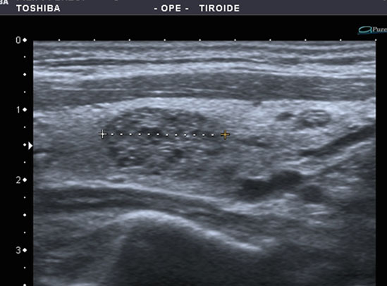
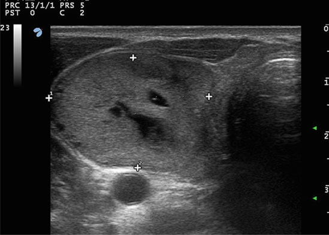
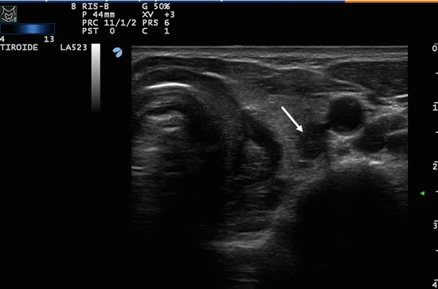
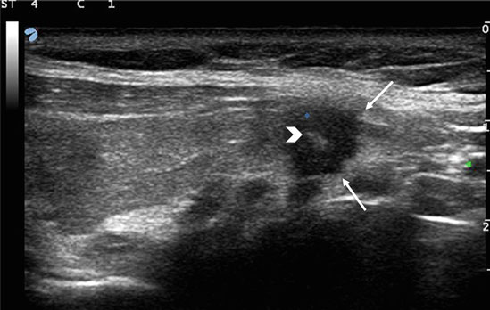
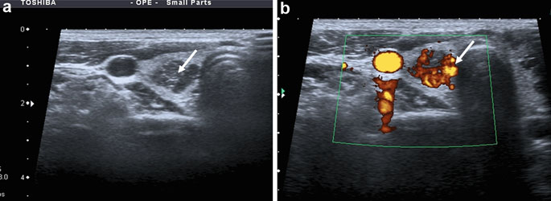
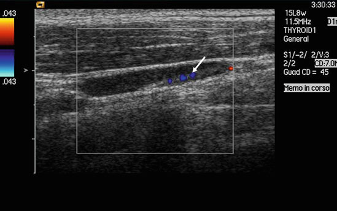
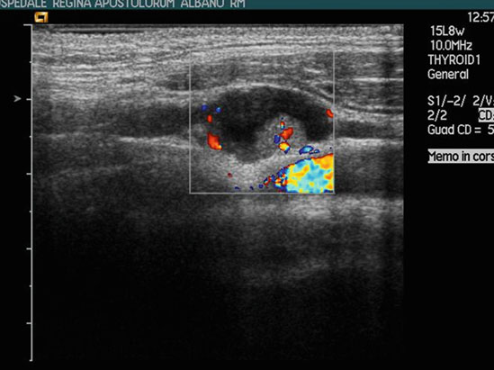
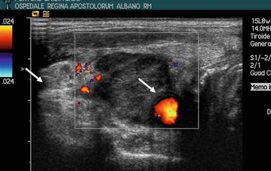
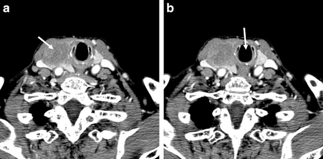
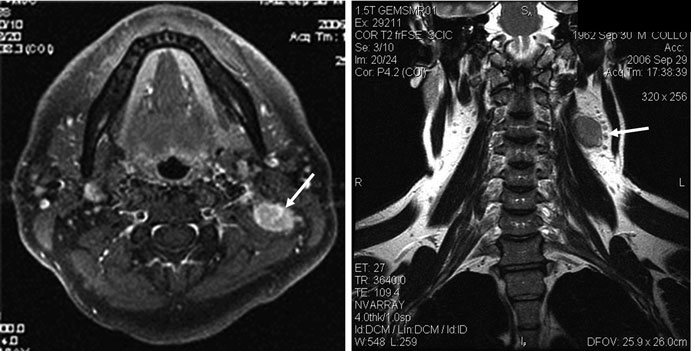

<!DOCTYPE html>
<html lang="en">
<head>
<meta charset="UTF-8">
<meta name="viewport" content="width=device-width, initial-scale=1.0">
<title>Surgical Insight Hub — Nonisotopic Thyroid Imaging Monograph</title>
<link href="https://fonts.googleapis.com/css2?family=Playfair+Display:wght@400;600;700&family=Source+Serif+4:ital,opsz,wght@0,8..60,300;0,8..60,400;0,8..60,600;1,8..60,300;1,8..60,400&family=JetBrains+Mono:wght@400;500&display=swap" rel="stylesheet">
<link rel="stylesheet" href="../../css/theme.css?v=4.0.0">
<link rel="stylesheet" href="../../css/shared.css">
<script>
  const savedTheme = localStorage.getItem('sih-theme') || 'light';
  if (savedTheme === 'dark') document.documentElement.setAttribute('data-theme', 'dark');
</script>
<style>
:root {
  --primary:   #4C1D95; 
  --primary-dk:#2E1065;
  --primary-lt:#F5F3FF;
  --accent:    #7C3AED;
  --accent2:   #E11D48;
  --gold:      #D97706;
  --gold-lt:   #FEF3C7;
  --red:       #E11D48;
  --red-lt:    #FFF1F2;
  --bg:        #FAFAFA;
  --bg2:       #F4F4F5;
  --border:    #E5E7EB;
  --text:      #0F172A;
  --muted:     #64748B;
  --white:     #FFFFFF;
  --sidebar-w: 320px;
}
[data-theme="dark"] {
  --bg: #0A0702;
  --bg2: #140E05;
  --text: #F3F4F6;
  --muted: #A3A3A3;
  --border: rgba(255,255,255,0.08);
  --primary-lt: #2E1065;
  --white: #140E05;
}
*,*::before,*::after{box-sizing:border-box;margin:0;padding:0;}
html{scroll-behavior:smooth;}
body{font-family:'Source Serif 4',Georgia,serif;background:var(--bg);color:var(--text);font-size:16px;line-height:1.75;}

#sidebar {
  position: fixed; top: 0; left: 0; width: var(--sidebar-w); height: 100vh;
  background: var(--primary-dk); color: #F5F3FF;
  display: flex; flex-direction: column;
  z-index: 1000; overflow: hidden;
  transform: translateX(-100%);
  transition: transform 0.3s cubic-bezier(0.4, 0, 0.2, 1);
  box-shadow: 4px 0 24px rgba(0,0,0,0.4);
}
body.sidebar-open #sidebar { transform: translateX(0); }

#sidebar-overlay {
  position: fixed; top: 0; left: 0; width: 100vw; height: 100vh;
  background: rgba(46, 16, 101, 0.7); backdrop-filter: blur(3px);
  z-index: 950; opacity: 0; pointer-events: none; transition: opacity 0.3s ease;
}
body.sidebar-open #sidebar-overlay { opacity: 1; pointer-events: auto; }

#sidebar-toggle {
  position: fixed; top: 72px; left: 24px; z-index: 900;
  background: var(--primary); color: white;
  border: none; border-radius: 30px;
  padding: 10px 18px; font-family: 'JetBrains Mono', monospace; font-size: 13px; font-weight: 600;
  letter-spacing: 0.05em; cursor: pointer; box-shadow: 0 4px 12px rgba(0,0,0,0.25);
  display: flex; align-items: center; gap: 8px; transition: all 0.2s;
}
#sidebar-toggle:hover { background: var(--accent2); transform: translateY(-2px); }

#sidebar-header{padding:20px 20px 14px;border-bottom:1px solid rgba(255,255,255,0.08);flex-shrink:0;}
#sidebar-header .logo{font-family:'Playfair Display',serif;font-size:13px;font-weight:700;color:var(--accent2);letter-spacing:0.08em;text-transform:uppercase;margin-bottom:4px;}
#sidebar-header .sub{font-size:10.5px;color:rgba(245,243,255,0.6);letter-spacing:0.04em;}
#sidebar-search{padding:10px 14px;border-bottom:1px solid rgba(255,255,255,0.05);flex-shrink:0;}
#sidebar-search input{width:100%;background:rgba(255,255,255,0.05);border:1px solid rgba(255,255,255,0.1);border-radius:6px;color:#F5F3FF;padding:6px 10px;font-size:12px;font-family:'Source Serif 4',serif;outline:none;transition:border-color 0.2s;}
#sidebar-search input::placeholder{color:rgba(245,243,255,0.4);}
#sidebar-search input:focus{border-color:var(--accent2);}
#sidebar-nav{flex:1;overflow-y:auto;padding:8px 0 20px;}
#sidebar-nav::-webkit-scrollbar{width:4px;}
#sidebar-nav::-webkit-scrollbar-thumb{background:rgba(255,255,255,0.15);border-radius:2px;}
.vol-label{font-size:9.5px;font-weight:600;letter-spacing:0.12em;text-transform:uppercase;color:var(--accent2);padding:14px 18px 4px;}
.nav-item{display:block;padding:8px 18px 8px 22px;font-size:12.5px;color:rgba(245,243,255,0.8);text-decoration:none;border-left:2px solid transparent;transition:all 0.15s;line-height:1.4;}
.nav-item:hover{color:#fff;background:rgba(255,255,255,0.03);border-left-color:rgba(225,29,72,0.5);}
.nav-item.active{color:#fff;background:rgba(255,255,255,0.06);border-left-color:var(--accent2);font-weight:600;}
.nav-item .num{font-family:'JetBrains Mono',monospace;font-size:10px;color:rgba(245,243,255,0.4);margin-right:6px;}

#main{margin-left:0; min-height:100vh;}
#hero{background:linear-gradient(135deg,var(--primary-dk) 0%,#4C1D95 60%,#2E1065 100%);color:white;padding:120px 72px 60px;position:relative;overflow:hidden;}
#hero::before{content:'';position:absolute;top:-60px;right:-60px;width:380px;height:380px;background:radial-gradient(circle,rgba(225,29,72,0.15) 0%,transparent 70%);pointer-events:none;}
#hero::after{content:'';position:absolute;bottom:0;left:0;right:0;height:3px;background:linear-gradient(90deg,var(--accent2),var(--gold),transparent);}
#hero .eyebrow{font-family:'JetBrains Mono',monospace;font-size:11px;letter-spacing:0.16em;color:var(--accent2);text-transform:uppercase;margin-bottom:14px;}
#hero h1{font-family:'Playfair Display',serif;font-size:42px;font-weight:700;line-height:1.15;margin-bottom:10px;color:#fff;}
#hero .subtitle{font-size:18px;color:rgba(255,255,255,0.8);font-style:italic;margin-bottom:28px;}
#hero .badges{display:flex;gap:10px;flex-wrap:wrap;}
#hero .badge{background:rgba(255,255,255,0.1);border:1px solid rgba(255,255,255,0.2);border-radius:20px;padding:4px 14px;font-size:12px;color:rgba(255,255,255,0.95);font-family:'JetBrains Mono',monospace;}

.content-wrap{max-width:900px;margin:0 auto;padding:40px 48px 80px;}

.callout{margin:18px 0;padding:14px 18px;border-radius:0 8px 8px 0;border-left:4px solid;font-size:14px;line-height:1.65;}
.callout .label{font-family:'JetBrains Mono',monospace;font-size:10px;font-weight:600;letter-spacing:0.12em;text-transform:uppercase;display:block;margin-bottom:4px;}
.callout.pearl{background:var(--gold-lt);border-color:var(--gold);color:var(--text);}
.callout.pearl .label{color:var(--gold);}
.callout.warn{background:var(--red-lt);border-color:var(--red);color:var(--text);}
.callout.warn .label{color:var(--red);}

@media(max-width:900px) {
  .content-wrap { padding: 20px 20px 60px; }
  #hero { padding: 80px 20px 40px; }
  #hero h1 { font-size: 30px; }
  #sidebar-toggle { top: 64px; left: 16px; }
}
</style>
<link rel="icon" type="image/png" href="../../assets/images/Surgical_Insight_Hub_Logo.png">
</head>
<body>

<nav class="nav" id="mainNav">
  <div class="nav-left">
    <a href="../../index.html" class="nav-pill">
      <div class="nav-logo-img">
        
      </div>
      <div>
        <div class="nav-brand-text">Surgical Insight Hub</div>
        <div class="nav-brand-sub">The Residency Journal</div>
      </div>
    </a>
  </div>
  <div class="nav-links-pill">
    <a href="../../index.html">Home</a>
    <a href="../../notes.html" class="active">Notes</a>
    <a href="../operative_approach.html">Playbook</a>
    <a href="../../arena.html?v=4.0.0">MCQ Arena</a>
    <a href="../../podcast.html">Podcast</a>
    <a href="../../surgery-talk.html">Surgery Talk</a>
    <a href="../../about.html">About</a>
  </div>
  <div class="nav-right">
    <button class="theme-toggle" id="themeToggle" aria-label="Toggle Theme">
      <svg id="moonIcon" viewBox="0 0 24 24" width="18" height="18"><path d="M21 12.79A9 9 0 1 1 11.21 3 7 7 0 0 0 21 12.79z"></path></svg>
      <svg id="sunIcon" style="display:none;" viewBox="0 0 24 24" width="18" height="18"><circle cx="12" cy="12" r="5"></circle><line x1="12" y1="1" x2="12" y2="3"></line><line x1="12" y1="21" x2="12" y2="23"></line><line x1="4.22" y1="4.22" x2="5.64" y2="5.64"></line><line x1="18.36" y1="18.36" x2="19.78" y2="19.78"></line><line x1="1" y1="12" x2="3" y2="12"></line><line x1="21" y1="12" x2="23" y2="12"></line><line x1="4.22" y1="19.78" x2="5.64" y2="18.36"></line><line x1="18.36" y1="5.64" x2="19.78" y2="4.22"></line></svg>
    </button>
    <a href="https://t.me/sugicalInsightHub" target="_blank" class="nav-tg-btn" title="Join Telegram">
      <svg width="18" height="18" viewBox="0 0 24 24" fill="#f0d080"><path d="M12 0C5.37 0 0 5.37 0 12s5.37 12 12 12 12-5.37 12-12S18.63 0 12 0zm5.89 8.22l-1.97 9.28c-.15.66-.54.82-1.08.51l-3-2.21-1.45 1.39c-.16.16-.3.3-.61.3l.21-3.05 5.56-5.02c.24-.21-.05-.33-.37-.12l-6.87 4.33-2.96-.92c-.64-.2-.66-.64.14-.95l11.57-4.46c.54-.19 1.01.13.83.94z"/></svg>
    </a>
    <a href="../../arena.html?v=4.0.0" class="nav-btn arena-btn">MCQ Arena</a>
  </div>
</nav>

<div class="mob-nav-overlay" id="mobNavOverlay" onclick="closeMobNav()"></div>
<div class="mob-nav-sheet" id="mobNavSheet">
  <div class="mob-nav-handle"></div>
  <a href="../../index.html" onclick="closeMobNav()">Home</a>
  <a href="../../notes.html" onclick="closeMobNav()">Notes</a>
  <a href="../operative_approach.html" onclick="closeMobNav()">Playbook</a>
  <a href="../../podcast.html" onclick="closeMobNav()">Podcast</a>
  <a href="../../surgery-talk.html" onclick="closeMobNav()">Surgery Talk</a>
  <a href="../../arena.html" onclick="closeMobNav()">MCQ Arena</a>
  <a href="../../about.html" onclick="closeMobNav()">About</a>
  <a href="https://t.me/sugicalInsightHub" target="_blank" rel="noopener" onclick="closeMobNav()" style="color: var(--brand-gold); font-weight: 800;">Join Telegram Community</a>
</div>

<button id="sidebar-toggle" onclick="toggleSidebar()">
  <span>📜</span> Chapter Navigation
</button>
<div id="sidebar-overlay" onclick="closeSidebar()"></div>

<aside id="sidebar">
  <div id="sidebar-header">
    <div class="logo">Surgical Insight Hub</div>
    <div class="sub">Thyroid Dx Textbook Series</div>
  </div>
  <div id="sidebar-search">
    <input type="text" placeholder="Search chapters..." oninput="filterNav(this.value)">
  </div>
  <nav id="sidebar-nav">
    <div class="vol-label">All 25 Endocrine Chapters</div>
    <a class="nav-item" href="endocrine_ch01_regulation_of_thyroid_function.html"><span class="num">Ch 1</span>Regulation of Thyroid Function, Synthesis, and Function of Thyroid Hormones</a>
<a class="nav-item" href="endocrine_ch02_tests_of_thyroid_function.html"><span class="num">Ch 2</span>Tests of Thyroid Function</a>
<a class="nav-item" href="endocrine_ch03_thyroid_autoantibodies.html"><span class="num">Ch 3</span>Thyroid Autoantibodies</a>
<a class="nav-item active" href="endocrine_ch04_nonisotopic_thyroid_imaging.html"><span class="num">Ch 4</span>Nonisotopic Thyroid Imaging</a>
<a class="nav-item" href="endocrine_ch05_nontoxic_goiter.html"><span class="num">Ch 5</span>Nontoxic Goiter</a>
<a class="nav-item" href="endocrine_ch06_thyroid_nodule.html"><span class="num">Ch 6</span>Thyroid Nodule</a>
<a class="nav-item" href="endocrine_ch07_hashimoto_s_thyroiditis.html"><span class="num">Ch 7</span>Hashimoto´s Thyroiditis</a>
<a class="nav-item" href="endocrine_ch08_postpartum_thyroiditis_and_sil.html"><span class="num">Ch 8</span>Postpartum Thyroiditis and Silent Thyroiditis</a>
<a class="nav-item" href="endocrine_ch09_acute_and_subacute_thyroiditis.html"><span class="num">Ch 9</span>Acute and Subacute Thyroiditis</a>
<a class="nav-item" href="endocrine_ch10_classification_and_etiopathoge.html"><span class="num">Ch 10</span>Classification and Etiopathogenesis of Hypothyroidism</a>
<a class="nav-item" href="endocrine_ch11_congenital_hypothyroidism.html"><span class="num">Ch 11</span>Congenital Hypothyroidism</a>
<a class="nav-item" href="endocrine_ch12_central_hypothyroidism.html"><span class="num">Ch 12</span>Central Hypothyroidism</a>
<a class="nav-item" href="endocrine_ch13_diagnosis_and_treatment_of_hyp.html"><span class="num">Ch 13</span>Diagnosis and Treatment of Hypothyroidism</a>
<a class="nav-item" href="endocrine_ch14_graves_disease.html"><span class="num">Ch 14</span>Graves´ Disease</a>
<a class="nav-item" href="endocrine_ch15_graves_ophthalmopathy.html"><span class="num">Ch 15</span>Graves´ Ophthalmopathy</a>
<a class="nav-item" href="endocrine_ch16_treatment_of_graves_disease.html"><span class="num">Ch 16</span>Treatment of Graves´ Disease</a>
<a class="nav-item" href="endocrine_ch17_toxic_adenoma_and_multinodular.html"><span class="num">Ch 17</span>Toxic Adenoma and Multinodular Toxic Goiter</a>
<a class="nav-item" href="endocrine_ch18_pathogenesis_of_thyroid_carcin.html"><span class="num">Ch 18</span>Pathogenesis of Thyroid Carcinoma</a>
<a class="nav-item" href="endocrine_ch19_differentiated_thyroid_carcino.html"><span class="num">Ch 19</span>Differentiated Thyroid Carcinoma of Follicular Origin</a>
<a class="nav-item" href="endocrine_ch20_medullary_carcinoma.html"><span class="num">Ch 20</span>Medullary Carcinoma</a>
<a class="nav-item" href="endocrine_ch21_anaplastic_and_other_forms_of_.html"><span class="num">Ch 21</span>Anaplastic and Other Forms of Thyroid Carcinoma</a>
<a class="nav-item" href="endocrine_ch22_new_medical_treatment_for_thyr.html"><span class="num">Ch 22</span>New (Medical) Treatment for Thyroid Carcinoma</a>
<a class="nav-item" href="endocrine_ch23_thyroid_physiology_and_thyroid.html"><span class="num">Ch 23</span>Thyroid Physiology and Thyroid Diseases in Pregnancy</a>
<a class="nav-item" href="endocrine_ch24_non_thyroidal_illness.html"><span class="num">Ch 24</span>Non-thyroidal Illness</a>
<a class="nav-item" href="endocrine_ch25_drugs_and_other_substances_int.html"><span class="num">Ch 25</span>Drugs and Other Substances Interfering with Thyroid Function</a>

  </nav>
</aside>

<main id="main">
<header id="hero">
  <div class="eyebrow">Endocrine Surgery · Chapter 4</div>
  <h1>Nonisotopic Thyroid Imaging</h1>
  <p class="subtitle">Structured Surgical Monograph formatted with fluid prose, inline textbook diagnostic plates, and clinical guidance.</p>
  <div class="badges">
    <span class="badge">Chapter 4</span>
    <span class="badge">Inline Plates</span>
    <span class="badge">Thyroid Dx PDF</span>
  </div>
</header>

<div class="content-wrap">
  <section class="topic">
    
    <div class="callout pearl" style="margin-bottom:28px;">
      <span class="label">🎓 TEXTBOOK MONOGRAPH — THYROID DX</span>
      Full surgical monograph extracted directly from <strong>Thyroid Pathology and Laboratory Diagnostics</strong> (Chapter 4: Nonisotopic Thyroid Imaging). Features complete text, formatted clinical guidance, and inline textbook figures.
    </div>
<p style="font-size:16px; line-height:1.75; margin-bottom:16px; color:var(--text);">Nonisotopic Thyroid Imaging E. Papini, R. Guglielmi, G. Bizzarri, and A. Frasoldati Contents A Rationale for the Use of Thyroid Imaging ................................................... Techniques ....................................................................................... Ultrasonography ............................................................................. Computed Tomography and Magnetic Resonance .......................................... Thyroid Imaging for the Assessment of Diffuse Thyroid Disease ............................. Ultrasound .................................................................................... Other Imaging Techniques ................................................................... Thyroid Imaging for the Assessment of Risk of Malignancy in Focal Thyroid Lesions ...... Thyroid Ultrasound .......................................................................... CT and MRI .................................................................................. Thyroid Imaging for the Presurgical Staging and Follow-Up of Thyroid Malignancy ........ Ultrasonography ............................................................................. CT and MR Imaging ......................................................................... Postsurgical Thyroid Imaging for Follow-Up of Thyroid Carcinoma .........................</p>
<h3 style="font-family:'Playfair Display',serif; font-size:20px; color:var(--primary); margin:32px 0 14px; border-bottom:1px solid var(--border); padding-bottom:6px;">Summary .........................................................................................</h3>

                <div style="display:flex; gap:16px; margin:20px 0; padding:16px; border-radius:14px; border:1px solid var(--border); background:var(--bg2); align-items:center;">
                  <div style="width:180px; min-width:180px; height:140px; border-radius:10px; overflow:hidden; border:1px solid var(--border); background:#fff; display:flex; align-items:center; justify-content:center; padding:6px; flex-shrink:0;">
                    
                  </div>
                  <div style="flex:1;">
                    <div style="font-family:'JetBrains Mono',monospace; font-size:11px; font-weight:700; color:var(--accent2); text-transform:uppercase; margin-bottom:6px;">Textbook Illustration &amp; Diagnostic Plate</div>
                    <div style="font-size:13.5px; color:var(--muted); line-height:1.5;">High-resolution diagnostic plate illustrating summary ......................................................................................... in Chapter 4.</div>
                  </div>
                </div>
<h3 style="font-family:'Playfair Display',serif; font-size:20px; color:var(--primary); margin:32px 0 14px; border-bottom:1px solid var(--border); padding-bottom:6px;">References .......................................................................................</h3>

                <div style="display:flex; gap:16px; margin:20px 0; padding:16px; border-radius:14px; border:1px solid var(--border); background:var(--bg2); align-items:center;">
                  <div style="width:180px; min-width:180px; height:140px; border-radius:10px; overflow:hidden; border:1px solid var(--border); background:#fff; display:flex; align-items:center; justify-content:center; padding:6px; flex-shrink:0;">
                    
                  </div>
                  <div style="flex:1;">
                    <div style="font-family:'JetBrains Mono',monospace; font-size:11px; font-weight:700; color:var(--accent2); text-transform:uppercase; margin-bottom:6px;">Textbook Illustration &amp; Diagnostic Plate</div>
                    <div style="font-size:13.5px; color:var(--muted); line-height:1.5;">High-resolution diagnostic plate illustrating references ....................................................................................... in Chapter 4.</div>
                  </div>
                </div>
<p style="font-size:16px; line-height:1.75; margin-bottom:16px; color:var(--text);">Abstract Thyroid ultrasonography (US) is a reliable diagnostic tool for the evaluation of focal and diffuse thyroid disease. US accurately identifies the size and location of Disclosure of Interests: The authors have no financial interest to declare. E. Papini (*) • R. Guglielmi Department of Endocrinology and Metabolism, Ospedale Regina Apostolorum, Albano (Rome), Italy e-mail: papinie@gmail.com G. Bizzarri Department of Diagnostic Imaging, Ospedale Regina Apostolorum, Albano (Rome), Italy A. Frasoldati Department of Endocrinology, Ospedale Santa Maria Nuova IRCCS, Reggio Emilia, Italy # Springer International Publishing AG, part of Springer Nature 2018 P. Vitti, L. Hegedüs (eds.), Thyroid Diseases, Endocrinology, thyroid nodules and defines their risk of malignancy. Irregular margins, micro- calcifications, taller-than-wide shape, deep hypoechogenicity and extrathyroid extension are clear-cut signs of malignancy while the predictive role of color- doppler and elastography findings is still controversial. The use of the recently proposed US classifications systems decreases the possible inconsistency of US descriptive reports, provides a reproducible tool to select lesions that should undergo aspiration biopsy, and improves the communication between sonographers, clinicians and pathologists. Additionally, US examination may suggest an altered thyroid function or an inflammatory condition or confirm size abnormalities and changes of thyroid structure. The expensive cross-sectional imaging techniques (computed tomography or magnetic resonance imaging) are less sensitive and specific tools for the diagnosis of thyroid diseases. These imaging modalities should be used in the presurgical staging of thyroid malignancies at risk of extra-thyroidal spread to demonstrate the involvement of cervical structures and planning the extension of surgery. Their use in the postsurgical surveillance of cervical cancer recurrences appears limited and is indicated mainly in patients with increasing thyroglobulin (or calcitonin) levels and inconclusive neck US. The role of functional imaging methods (thyroid scintiscan and PET/CT) is addressed in the dedicated section of this text. Keywords Thyroid imaging · Thyroid ultrasound · Computerized tomography · Magnetic resonance imaging · Thyroid nodules A Rationale for the Use of Thyroid Imaging Currently, most physicians who commonly deal with thyroid diseases in their clinical practice use thyroid imaging as a major diagnostic tool for the management of their patients (American Institute of Ultrasound in Medicine et al. 2013; Haugen et al. 2016; Gharib et al. 2016). Thyroid imaging is primarily based on neck ultrasound (US) examination, and, in many countries, thyroid US evaluation is directly performed by endocrinologists in their offices. Notably, endocrine consultations are increasingly due to newly diagnosed thyroid lesions revealed by neck imaging studies (e.g., CT, MRI, color-Doppler carotid evaluation, PET/CT scan) performed for reasons not related to thyroid disease (Jin and McHenry 2012). Conversely, only in specific cases are these more expensive and less accessible technologies needed for a correct categorization of thyroid diseases. The widespread use of cervical US is probably the leading cause of the “epidemic” of thyroid nodules and the increased incidence of small-size thyroid carcinomas (Davies and Welch 2006; Leenhardt et al. 2004; Hegedüs 2016). The cost-benefit ratio of this trend is debated in light of the limited aggressiveness of most nonpalpable thyroid tumors and the consequent cost for society (Davies and Welch 2006; E. Papini et al. Leenhardt et al. 2004; Hegedüs 2016). For all these reasons, the endocrinologist should have anadequate knowledgeof thevarious thyroid imagingtechniques, should use them appropriately, and should evaluate their results according to a cost-effective strategy. The clinical settings in which thyroid imaging plays a relevant role are the following: • Patients with thyroid enlargement or tenderness or with the finding of a cervical lump at physical examination • Patients with laboratory abnormalities indicating a thyroid disease or first-degree young relatives of patients with autoimmune thyroid disease • Patients at high risk for thyroid malignancy (history of familial thyroid carci- noma, previous neck irradiation) • Stratification of the risk of malignancy of thyroid nodules • Guidance for thyroid nodule fine-needle aspiration (FNA) or for minimally invasive procedures • Presurgical staging of patients who undergo surgery for thyroid malignancy or symptomatic goiter • Postsurgical surveillance of neck recurrences after resection of thyroid carcinoma Thyroid US examination with high-frequency transducers provides an unmatched spatial and time resolution for the detection of focal lesions, the stratification of the risk of malignancy, and the assessment of diffuse structural abnormalities. Thyroid radioisotope scan is of use for the characterization of the gland’s functional status in hyperthyroid patients, especially if candidate for radioiodine treatment, and for the detection of hyperfunctioning nodules that usually do not deserve FNA, in toxic multinodular goiter (Bonnema and Hegedüs 2012). Computed tomography (CT) and magnetic resonance imaging (MRI) offer valuable information in patients with a large goiter or an invasive tumor in the presurgical evaluation for classification of whether eligible or not for surgery. These cross-sectional imaging techniques pro- vide a detailed definition of the relationship of the thyroid with the anatomical structures located in the neck or the mediastinum. In the following paragraphs, the details of these thyroid imaging techniques and their clinical indications will be concisely reported. Techniques Ultrasonography The normal thyroid is a bilobed gland, located in the lower anterior neck, with two pear-shaped lobes connected anteriorly by a central rim of tissue defined as the isthmus. The left and right lobes are located immediately to the left and right of the trachea, respectively. The internal carotid arteries and internal jugular veins are located posterolaterally to the thyroid lobes, whereas the strap muscles of the neck are located anteriorly (Solbiati et al. 2001; Arun et al. 2014). Usually, the thyroid gland size is Nonisotopic Thyroid Imaging 20 mm or less in both the transverse and the anteroposterior diameter and is 40–60 mm in its longitudinal diameter. The isthmus typically has an anteroposterior thickness of less than 3–5 mm (Arun et al. 2014). Thyroid volume may be estimated with the ellipsoid formula (Papini et al. 2014) or, more precisely, with a dedicated tridimen- sional software. At US evaluation, normal thyroid echotexture appears fairly homo- geneous with a slight ground-glass appearance and is more echogenic with respect to strap muscles (Leenhardt et al. 2011). Cervical US investigation is performed on patients in the supine position and with their neck in hyperextension over a pad (Solbiati et al. 2001). The thyroid gland is initially scanned along the longitudinal and transverse planes for a general evaluation. Subsequently, the entire region is systematically explored in the longitudinal plane starting from the midline to explore the thyroid isthmus and then laterally on each side to view the medial, central, and lateral aspects of each lobe and of the adjacent cervical region. Each longitudinal scan is performed from the sternal notch toward the hyoid bone region (Baskin 2008; Chaudhary and Bano 2013). The vascular landmarks of the lateral borders of the thyroid gland are the common carotid artery and the jugular vein. US examination should be extended cranially beyond the thyroid cartilage to assess the presence of the pyramidal lobe, thyroglossal duct cysts, or masses of different origin. The whole thyroid should then be carefully evaluated by transverse scans of the upper, middle, and lower part of each lobe. In presence of thyroid or cervical lesions, the detected nodules or lymph nodes should be examined along several planes by carefully revolving the probe over the area of interest. All the US findings that may be helpful for the clinical management of diffuse or nodular thyroid disease should be assessed and the characters, dimensions, and location clearly reported. The US images of focal thyroid disease and the graphic representation of regional lymph node involvement should be part of the US report (Leenhardt et al. 2011; Frasoldati et al. 2016). Computed Tomography and Magnetic Resonance US examination is the primary imaging modality for thyroid disease, but other cross- sectional techniques used for the evaluation of neck or chest disease may commonly reveal thyroid abnormalities (Frasoldati et al. 2016). The diagnostic accuracy of CT and MRI for thyroid malignancy is low, and these imaging methods are of no use in the diagnostic work-up of thyroid nodules. In contrast, they are useful tools for the presurgical assessment of the intrathoracic growth of large goiters as well as for the evaluation of the extension of the disease in patients with aggressive thyroid malignancy (Binder et al. 1980; Park et al. 2016) Today, multidetector CT (MDCT) allows multiplanar reconstructions (axial, sagittal, coronal planes) with slice thickness of 2 mm or less. Acquisition should include a volume from the skull base to the tracheal bifurcation (Baskin 2008). At the CT evaluation, when without contrast medium, the thyroid appears as a homoge- neous and mildly hyperattenuating gland when compared to the surrounding neck muscles and has an average attenuation of 80–100 HU. After the injection of contrast material, the gland shows an intense and homogeneous enhancement. E. Papini et al. For large goiters, a study without contrast injection may disclose a relevant intrathoracic growth that should best be approached in a thoracic surgery depart- ment. For invasive thyroid carcinomas, the use of CT contrast media is usually needed to reliably rule out an infiltrative growth or the presence of nodal metastasis in cervical regions (e.g., the retrotracheal area) that cannot be reliably visualized by US examination (Arun et al. 2014; Frasoldati et al. 2016). In such patients with aggressive disease who are candidates for rapid radioiodine ablation and post-dose whole-body scintigraphy, MRI with gadolinium should be used as the first choice cross-sectional imaging method because the iodide load of CT contrast media may interfere with thyroid iodide uptake for a few months (Park et al. 2016). MRI examination is commonly performed with axial and coronal T1-weighted and with fat-saturated T2-weighted images, followed by post-contrast axial and coronal T1-weighted images. When compared with the cervical muscles, the thyroid gland is faintly hyperintense on T1-weighted MR images and iso- to slightly hyperintense on T2-weighted images. Analogously to contrast-enhanced CT imaging, gadolinium-enhanced MRI shows the thyroid gland as characterized by an intense and homogeneous enhancement (Arun et al. 2014). MRI offers special opportunity by functional imaging capability as diffusion-weighted imaging (DWI). DWI was recently proposed in the detection and characterization of thyroid cancer and neck recurrences and is reported as being highly specific, but having a low-sensitivity, diagnostic procedure for thyroid nodule evaluation (Noda et al. 2015). Both MRI and CT imaging provide precise anatomic information regarding the position of the thyroid relative to adjacent vascular, respiratory, and muscular structures. Still, in spite of the better contrast resolution of MR imaging and the elevated spatial resolution of CT, B-mode US examination remains the best option for the evaluation of thyroid nodules and cervical lesions. Thyroid Imaging for the Assessment of Diffuse Thyroid Disease Ultrasound Diffuse structural changes as well as marked alterations of thyroid volume may be observed in a number of different clinical conditions, most frequently diffuse or multinodular goiter (MNG); autoimmune inflammatory disorders, i.e., Hashimoto’s thyroiditis and Graves’ disease; and de Quervain’s subacute thyroiditis (Papini et al. 2014). Multinodular goiter (MNG) is characterized by a marked, symmetric enlargement of both thyroid lobes or, less frequently, with an asymmetric growth of the thyroid lobes (Hegedüs et al. 2016; Bahn and Castro 2011). The US examination may demonstrate presence of a variable number of nodules of different size, sometimes strictly contiguous or truly confluent (Chaudhary and Bano 2013; Frasoldati et al. 2016; Binder et al. 1980; Park et al. 2016; Noda et al. 2015; Hegedüs et al. 2016; Bahn and Castro 2011; Rago and Vitti 2014). The sonographic appearance of the gland is clearly inhomogeneous, with conglomerates of solid nodules, anechoic Nonisotopic Thyroid Imaging colloid collections sometimes exhibiting comet-tail artifacts, and hypoechoic degen- erative or hemorrhagic areas without normal thyroid parenchyma (Ahuja et al. 1996). Eggshell-like or isolated macrocalcifications may be present, due to previous inflammatory and/or necrotic changes. This clinical and US picture reliably indicates a benign condition, even if the occurrence of small occult neoplastic foci (mostly MPTC) cannot be completely excluded as evinced by autopsy data (Kovács et al. 2005). In the absence of suspicious features, FNA should be performed only on large (>20 mm) and in size increasing nodules. Close attention should be devoted to the appearance, over time, of large, solid, and marked hypoechoic areas, with intrinsic vascularity and necrotic foci, which may suggest development of follicular or anaplastic thyroid carcinomas (Hoang et al. 2007). Hashimoto’s thyroiditis and Graves’ disease are clinical conditions that share com- mon pathologic changes. Diffuse lymphocytic infiltration of the thyroid gland, markedly increased vascularity, and later appearance of fibrotic changes are commonly observed in both conditions (American Institute of Ultrasound in Medicine et al. 2013; Walfish 1997; Langer et al. 2001). Thus, overt hyperthyroid and hypothyroid patients may present with rather similar US images, characterized by a pronounced hypoechoic gland with hyperechoic fibrotic streaks, pseudonodular organization of the parenchyma, and lobulated posterior margins (Yamashiro et al. 2007; Lupo and Levine 2014). Especially, in Graves’ disease the vascularity is strongly increased, and in the active phase of the inflammatory process, color-Doppler imaging reveals intense and diffuse vascular signals, defined as the “thyroid inferno” pattern (Ralls et al. 1988). In the majority of patients with autoimmune thyroiditis in its active stage, vascularity is also increased, yet less dramatically than in Graves’ disease. Initially, the hypoechogenicity may be mild, and the thyroid gland may still appear as rather homogeneous (Fig. 1). Subsequently, the gland becomes frankly inhomogeneous, due to the presence of Fig. 1 US scan of the thyroid gland in a 16-year-old patient with initial lymphocytic thyroiditis. The size is within normal limits, but a slight inhomogeneous texture may be appreciated E. Papini et al. multiple confluent small hypoechoic areas (“salt-and-pepper” pattern), which may be difficult to differentiate from the picture in subacute thyroiditis (Bennedbaek and Hegedüs 1997), and its volume may decrease, preluding to a progressive atrophic involution (Yamashiro et al. 2007). In patients with subclinical hypothyroidism, who present with a “normal” thyroid gland at physical examination and no detectable serum antithyroid antibodies, US evaluation may often reveal the typical US changes of chronic thyroiditis (Rago et al. 2001). Thus, in these patients with subclinical autoimmune thyroiditis, thyroid US findings may justify the control of thyroid function over time (Pedersen et al. 2000; Raber et al. 2002; Rosário et al. 2009; Tam et al. 2015). Both in Hashimoto’s thyroiditis and in Graves’ disease, inflammatory lymph nodes are usually revealed in the central neck compartment, either near the lower pole of the lobes or close to the anterior capsule of the isthmus. This finding may be helpful for the clinical diagnosis, because it usually precedes the onset of major changes of thyroid function, but may be misleading in the case of papillary carcinomas arising in chronic thyroiditis as they can be confused with metastatic lymph nodes. Notably, both benign and malignant nodules may coexist with chronic autoimmune thyroiditis, but the detection of small hypoechoic nodules may be particularly difficult due to the presence of the diffuse or focal inflammatory hypoechoic changes (Anderson et al. 2010a; Moon et al. 2009; Nam et al. 2015). Solid nodules with round shape, ill-defined smooth margins, and hyperechoic texture, as compared to the surrounding paren- chyma, are frequently observed in chronic thyroiditis and do not generally require cytologic examination due to their benign nature (Anderson et al. 2010b). Instead, pronounced hypoechoic nodules, even if hardly distinguishable from the hypoechoic inflammatory pattern of the thyroid gland, should always be carefully evaluated (Moon et al. 2009; Nam et al. 2015). The diagnosis of de Quervain’s subacute thyroiditis is usually clear-cut from the clinical picture, characterized by neck pain or tenderness, fever, and general malaise. The US presentation is, in most instances, distinctive with one or more areas of the gland involved by the appearance of highly hypoechoic, cloudy, or fingerlike areas (Yamashiro et al. 2007; Bennedbaek and Hegedüs 1997). These findings, caused by inflammation, typically show ill-defined margins and are nearly always devoid of vascular signals at color-Doppler examination. Subacute thyroiditis may initially affect only a portion of one lobe and then develop into a confluent pattern, eventually with patchy bilateral extension. Thus, the US texture of the gland is asymmetrically inhomogeneous, and, in some cases, a dominant part of one lobe may appear highly hypoechoic, while the contralateral lobe is often unaffected. The complete recovery of the thyroid tissue is to be expected, usually within 3–6 months, along with but delayed compared with the remission of clinical symptoms (Bennedbaek and Hegedüs 1997). Other Imaging Techniques Currently, the only indication for CT or MR imaging in diffuse, nonneoplastic, thyroid disease is the presurgical staging of large-size goiters that are associated Nonisotopic Thyroid Imaging with local pressure symptoms. Large goiters may variably affect the trachea and esophagus, and this may result in stenosis of the upper airway and/or swallowing dysfunction that may be clinically ill-defined unless appropriately evaluated (Sorensen et al. 2014). In these patients presurgery cross-sectional imaging should be performed for a better definition of the indication and timing of surgical resection and for an appropriate planning of the surgical approach (Binder et al. 1980; Park et al. 2016; Noda et al. 2015; Hegedüs et al. 2016; Bahn and Castro 2011; Rago and Vitti 2014; Ahuja et al. 1996; Kovács et al. 2005; Hoang et al. 2007; Walfish 1997; Langer et al. 2001; Yamashiro et al. 2007; Lupo and Levine 2014; Ralls et al. 1988; Bennedbaek and Hegedüs 1997; Rago et al. 2001; Pedersen et al. 2000; Raber et al. 2002; Rosário et al. 2009; Tam et al. 2015; Anderson et al. 2010a, b; Moon et al. 2009; Nam et al. 2015; Sorensen et al. 2014). Indeed, both CT and MRI may accurately define the extent of the intrathoracic growth of the goiter, the displace- ment of the vascular structures of the neck, and the severity of the airway lumen reduction (Arun et al. 2014; Cooper et al. 1991). Thyroid Imaging for the Assessment of Risk of Malignancy in Focal Thyroid Lesions Thyroid Ultrasound According to the definition provided by the recent guidelines for the clinical management of thyroid lesions, a thyroid nodule is a lesion “radiologically distinct from the surrounding parenchyma” (Haugen et al. 2016; Gharib et al. 2016). Thus, thyroid nodules are more precisely defined by means of US imaging than by the traditional physical examination. Additionally, thyroid nodules that are incidentally found during carotid duplex studies and other imaging techniques, like CT, MRI, and 2–18 [F] fluoro-2-deoxy-D-glucose (FDG) positron emission tomography (PET) (Giovannella et al. 2014; Davies et al. 2016), should be accurately evaluated with thyroid US examination based on the greater diagnostic accuracy of this technique. Therefore, irrespective of the road leading to the detection of thyroid nodules, a neck US examination should be performed with the evaluation of the following charac- teristics: (a) size and number, (b) texture and echogenicity, (c) shape and margins, (d) presence and type of calcifications, and (e) vascularization and stiffness pattern (Haugen et al. 2016; Gharib et al. 2016; Kim et al. 2002; Papini et al. 2002, 2016; Mandel 2004; Moon et al. 2011). Each of the abovementioned features will be separately discussed hereafter. All the collected information should be used for rating of the probability of malignancy (or benignity) of the nodule, a critical factor for the subsequent man- agement of the patient. The US TIRADS categorization of thyroid nodules, proposed in 2009 for this purpose (Horvath et al. 2009), has gained growing interest, as demonstrated by the attention for this issue in all recent guidelines (Haugen et al. 2016; Gharib et al. 2016; Shin et al. 2016; Perros et al. 2014). E. Papini et al. Size and number. Presently, about 40% of cytological diagnoses of thyroid malignancy relate to papillary microcarcinomas (PTMC), defined as tumors with a largest diameter of 1 cm or less (Davies and Welch 2014). While the size of a nodule scarcely predicts its benign or malignant nature (Papini et al. 2002; McHenry et al. 2008), a modest increase in the risk of malignancy may be expected in nodules larger than 4 cm in diameter (Haugen et al. 2016; Gharib et al. 2016). Importantly, larger thyroid tumors are often associated with more advanced local disease (Verburg et al. 2009). The long-term surveillance of thyroid nodules has traditionally been based on the detection of variations in their size. Yet, nodule growth does not indicate malignancy because benign hyperplastic nodules may exhibit a slow but progressive growth (Alexander et al. 2003; Durante et al. 2015), whereas the majority of PTMC may remain stable for years (Ito and Miyauchi 2015). Rather than an independent sign of malignancy, a steady nodule growth is relevant for the decision-making in the management of nodular thyroid disease, eventually suggesting an active treatment rather than a further wait-and-see strategy. US monitoring of nodule size is also critical for the evaluation of the objective response to any medical or nonsurgical treatment. For this purpose, the measurement of the major nodule diameter is frequently employed, but this is an unreliable index (Haugen et al. 2016; Gharib et al. 2016). As a nearly 20% interobserver variability in the measurement of any thyroid nodule diameter has been reported (Brauer et al. 2005), the determination of the volume of thyroid nodules with the ellipsoid formula (longitudinal diameter x transverse diameter x anteroposterior diameter  π/6) should preferentially be used. The volume of the nodule is, e.g., used to assess the efficacy of US-guided inter- ventional procedures, such as laser thermal ablation (LTA) or radiofrequency (RF) ablation (Gharib et al. 2016). This parameter may also be affected by up to a nearly 50% interobserver variability (Brauer et al. 2005; Choi et al. 2010; Park et al. 2010). Thus, a 50% increase in thyroid volume should be considered as a reasonable threshold for significant growth of thyroid lesions (Haugen et al. 2016). Three- dimensional (3-D) US imaging has been proposed to achieve a higher accuracy of volume measurement, as compared to planar images (McQueen and Bathia 2015), but it is still infrequently used in clinical practice. Similarly to the size, the number of thyroid nodules (solitary vs. multiple) seems to be irrelevant for the prediction of malignancy in the individual patient (Papini et al. 2002; Campanella et al. 2014). As a general rule, the number of the detected nodules should be included in the US report only when the lesions are clearly defined and can be reliably monitored. In multinodular goiters, with diffuse coalescent nodules, and in diffuse colloid cystic hyperplasia, with multiple anechoic or mixed lesions, the actual number of thyroid nodules may be difficult to assess, and detailed reporting is of limited clinical value (Gharib et al. 2016). Structure, echogenicity, and texture. At US examination the majority of thyroid nodules show a slightly inhomogeneous structure and may present either with a mixed, fluid/solid, pattern or a nonuniform solid texture due to degenerative or inflammatory changes. A complete homogeneous appearance is typical of a minority of lesions, specifically the anechoic cysts, exhibiting a totally fluid content, or the Nonisotopic Thyroid Imaging solid “isoechoic” nodules, showing a texture quite similar to that of perinodular thyroid parenchyma. In chronic autoimmune thyroiditis, several homogeneous hyperechoic solid areas are frequently observed within the hypoechoic gland (the “white knight” sign) (Mandel 2004; Moon et al. 2008; Wienke et al. 2003). Most thyroid carcinomas present as hypoechoic solid nodules at US examination. Unfortunately, about half of the benign nodules share this characteristic. Thus, hypoechogenicity in a solid thyroid nodule is a quite sensitive, yet poorly specific, predictor of malignancy (Mandel 2004; Moon et al. 2008). On the other hand, in case of marked hypoechogenicity, defined as an US texture that appears darker than that of the pre-thyroid muscles, the risk of malignancy is reported to rise up to nearly 90% (Cooper et al. 1991; Moon et al. 2008). These data are based on robust evidence, but it should be underlined that the assessment of echogenicity is associ- ated with a significant interobserver variability. Besides, the coexistence of chronic thyroiditis in the extranodular thyroid tissue may cause major problems in the interpretation of the actual nodule echogenicity (Choi et al. 2010; Park et al. 2010; Wienke et al. 2003). Thyroid nodules with a predominant cystic content only occasionally correspond to a thyroid carcinoma (Gharib et al. 2016) (Fig. 2). However, thyroid malignancy cannot be completely ruled out by the presence of a cystic component, since a 4–6% prevalence of thyroid malignancy in partially cystic nodules has been reported in several series (Chan et al. 2003; Lee et al. 2009). Mixed nodules with a large (50% of the volume) irregular solid component, which is eccentrically located and vascularized at color-Doppler examination, are at greater risk of being malignant Fig. 2 Transverse US scan of the thyroid gland. A large hemorrhagic cyst with regular margins and no solid internal lump is present in the right lobe. The aspect of the content is typical of bloody fluid. Benign lesion at histological examination E. Papini et al. (Chan et al. 2003; Lee et al. 2009). The coexistence of other suspicious features, such as microcalcifications and/or irregular margins or shape, is of aid in not overlooking this potentially insidious lesion. A category of echoic lesions which has recently gained interest as highly predictive of a benign thyroid nodule is the so-called spongiform nodule (Fig. 3). This kind of lesion, characterized by the aggregation of multiple microcystic components in more than 50% of the nodule volume, is consistently reported as associated with a nearly 100% benignity rate (Haugen et al. 2016; Gharib et al. 2016; Moon et al. 2008; Chan et al. 2003). Shape and margins. The vast majority of benign nodules have a round to oval profile (Kim et al. 2002; Moon et al. 2008) (Fig. 4), while malignant lesions sometimes exhibit a taller-than-wide shape (Fig. 5). This US sign (Kim et al. 2002) is based on a 1 ratio between the anteroposterior (AP) and the transverse diameter of the nodule, which is likely to reflect a centrifugal pattern of growth of the lesion. The above reported definition has been revised to include all nodules with an AP diameter longer than the transverse one, either measured in transverse or longitudinal planes (Moon et al. 2008). For clinical purposes, a simple and user- friendly categorization of nodule shape is the following: (a) oval to round, (b) taller than wide, and (c) irregular (Shin et al. 2016). The “taller-than-wide” sign is highly specific for malignancy but unfortunately has poor sensitivity (Campanella et al. 2014). Of note, when the contour of the nodule is highly irregular, the calculation of the AP/transverse (longitudinal) diameter ratio may be difficult and unreliable. Ill-defined margins have been indicated as signs of malignancy (Kim et al. 2002; Papini et al. 2002). Actually, this definition has been used to encompass different US patterns, with two consequences: this sign has variable accuracy across studies and Fig. 3 Longitudinal US scan of the thyroid gland. A benign isoechoic nodule with oval shape, spongiform appearance, and regular margins is seen Nonisotopic Thyroid Imaging its interobserver reproducibility has been rather low (Campanella et al. 2014; Wienke et al. 2003). For practical purposes, two questions should be separately addressed by the US examiner: (a) Is the nodule clearly demarcated from the extranodular tissue? (b) Is the nodule contour regular or not? Nodule margins may be ill-defined and yet show a regular and smooth profile, as it is often observed in Fig. 4 Tranverse US scan of the thyroid gland. A large isoechoic nodule with oval shape, small cystic changes, and regular margins is seen in the right lobe. The nodule was benign at histological examination Fig. 5 Tranverse US scan of the thyroid gland. A suspicious nodule with taller-than-wide shape, irregular margins, and intranodular microcalcifications is depicted in the left thyroid lobe. The nodule was a papillary carcinoma, tall cell variant, at histological examination E. Papini et al. mildly hypoechoic benign nodules (Reading et al. 2005). Notably, the lack of echogenicity difference between the nodule and the surrounding tissue (i.e., the absence of interface contrast) may be influenced by the technical performance of the US equipment and by the settings of the examination. Instead, spiculated margins, even when exhibiting a clear-cut separation from the surrounding parenchyma, is a highly specific sign of malignancy (Moon et al. 2008; Fig. 6). The so-called peripheral hypoechoic halo is easily detectable in a large number of nodules. In most instances, the halo corresponds to a peripheral arrangement of the nodule vascularity and is typically seen in benign hyperplastic nodules presenting with an even, smooth profile and a peripheral color-Doppler or power-Doppler flow mapping (Levine 2008). An unevenly thickened or incomplete hypoechoic halo, due to fibrotic pseudo-capsular structures or to inflammatory and/or necrotic changes, may be observed in a minority (about 10%) of papillary thyroid carcinomas and in many follicular carcinomas (Kobayashi et al. 2005; Youan et al. 2006; Jeh et al. 2007). In addition, the association of peripheral eggshell calcifications, with hypoechoic growth outside the calcification rim, may suggest malignancy (Moon et al. 2008; Kim et al. 2008). Although the majority of thyroid cancers are devoid of a peripheral halo, the absence of the halo has poor specificity as a predictor of malignancy. In conclusion, while the detection of a regular peripheral hypoechoic halo strengthens the judgment of benignity in regularly shaped and profiled nodules, an irregular hypoechoic halo in suspiciously looking nodules does not rule out malignancy, but rather makes it more probable. Calcifications. In clinical practice, three types of calcifications may be distin- guished on the basis of their size and localization: (a) microcalcifications; (b) macrocalcifications, also referred to as “coarse” calcifications; and (c) peripheral (or “rim”) calcifications (Khoo et al. 2002; Taki et al. 2004; Yoon et al. 2007). Microcalcifications appear as tiny (<1 mm) hyperechoic punctate spots, usually Fig. 6 US scan of the thyroid gland. A markedly hypoechoic nodule with round shape, spiculated margins (arrows), and intranodular hyperechoic spots (arrowhead) is clearly depicted. The nodule was a papillary carcinoma, classic variant, at histological examination Nonisotopic Thyroid Imaging devoid of posterior shadowing, and may correspond to psammoma bodies, a typical histological finding of papillary thyroid carcinoma (Wang et al. 2006; Chammas et al. 2008) (Figs. 6 and 7a). Microcalcifications need to be distinguished from the hyper- echoic spots defined as “comet-tail” artifacts. The latter are usually due to solid drops of colloid or to small interfaces within a mixed lesion and typically observed in benign nodules (Moon et al. 2008; Levine 2008; Beland et al. 2011). Intranodular hyper- echoic spots which cannot be clearly identified either as microcalcifications or as comet-tail artifacts should best be described in the US report as “indeterminate hyperechoic spots” (Gharib et al. 2016; Perros et al. 2014). The specificity of microcalcifications as a sign of malignancy is high (85–95%), but its sensitivity remains quite low (Campanella et al. 2014). Macrocalcifications are usually the result of necrotic or hemorrhagic changes and are frequently encountered in large benign goiters. However, when found in solitary solid nodules, they should be considered as a potential sign of malignancy (Khoo et al. 2002; Taki et al. 2004; Lee and Rho 2009). This rule does not apply to nodules previously treated by US-guided percutaneous minimally invasive procedures, such as percutaneous ethanol injection (PEI) or laser ablation (LA) and radiofrequency thermoablation, as coarse intranodular calcifications are frequently observed in these settings (Gharib et al. 2016; Guglielmi et al. 2004). Peripheral “rim” calcifications have traditionally been considered as a typical sign of “old” hyperplastic nodules. This issue has been questioned in recent studies as the discontinuity of the eggshell structure, especially if associated with extrusive growth of hypoechoic tissue, has been reported as predictive of malignancy (Haugen et al. 2016; Moon et al. 2008; Yoon et al. 2007). Vascularity. Color- and power-Doppler examinations provide useful information about the vascular architecture of thyroid nodules. Three types of color-flow map- ping may be identified (Solbiati et al. 2001; Yuan et al. 2006; Moon et al. 2010): – Peripheral: vascular signals are predominantly revealed around the nodule. Scanty blood flow may be occasionally detected in the central part of the nodule, but the prevalent blood distribution is clearly perinodular. Fig. 7 (a) Tranverse US scan of the thyroid gland. A suspicious nodule with irregular margins and intranodular microcalcifications (arrow) is present in the right lobe. (b) Intense chaotic vascular signals (arrow) are revealed by color-Doppler examination. The nodule was a papillary carcinoma, follicular variant, at histological examination E. Papini et al. – Intranodular: marked vascular signals are detected in the central part of the nodule. – Absent: absence of color-flow mapping, both in the peripheral and in the central part of the nodule. The value of this parameter in the differentiation between benign and malignant nodules is controversial (Shin et al. 2016; Tamsel et al. 2007). The majority of malignant nodules show an intranodular vascular pattern (Fig. 7b), but this pattern is shared by a non-negligible percentage of benign solid nodules as well. On the other hand, peripheral flow mapping is the pattern most often observed in benign nodules; yet, about 20% of thyroid cancers may also show a peripheral vascular ring (Rago et al. 2007). The complete absence of vascularity has also been suggested as a sign predictive of benignity, but the consistency of this finding is questionable. In light of this evidence, some authors do not recommend the routine use of color- or power- Doppler examination for thyroid nodules (Haugen et al. 2016). Thus, vascularity should represent only ancillary information in the diagnostic work-up of thyroid lesions (Gharib et al. 2016; Shin et al. 2016). Elastography pattern. Elastography provides a visual modeling based on a color scale of the degree of stiffness shown by the nodular tissue under the mechanical force applied by the US probe (Rago et al. 2007). The stiffer the nodule, the more likely that it is malignant (Fig. 8). The combination of elastography with B-mode US has been reported to increase the diagnostic performance of US evaluation (Rago et al. 2007; Trimboli et al. 2012; Azizi et al. 2013). Therefore, elastography may be Fig. 8 US scan and elastographic assessment of the thyroid gland. A hypoechoic nodule with irregular margins and posterior extracapsular growth (arrow) is present in the left thyroid lobe. Elastography demonstrates elevated stiffness of the nodule (blue color) (arrow). The nodule was a papillary carcinoma, classical variant, at histological examination Nonisotopic Thyroid Imaging of use in those nodules that show ambiguous features at US evaluation, in order to establish if they should be referred for FNA assessment (Russ et al. 2013). However, some limitations need to be taken into account. Primarily, elastography is an operator-dependent technique, and a consistent and universally validated reporting system is not yet available (Ghajarzadeh et al. 2014). Furthermore, coexisting diffuse alterations in the perinodular tissue, as in chronic thyroiditis, and the presence of macrocalcifications or large fluid areas greatly decrease elastography’s reliability (Trimboli et al. 2012). Recent technological developments [e.g., strain index, acous- tic radiation force impulse, supersonic shear wave (Zhang et al. 2014; Park et al. 2015; Liu et al. 2015)] are reported as valuable tools to overcome these limitations. Presently, elastography, as is the case for color-Doppler evaluation, provides only complementary information in the diagnostic work-up of thyroid lesions (Gharib et al. 2016; Shin et al. 2016). Ultrasound classification systems for thyroid nodules. The information col- lected with US evaluation of thyroid nodules can be used to stratify their risk of malignancy, in analogy with the imaging reporting system that was developed for breast lesions (BI-RADS) (D’Orsi et al. 2003). The adoption of a standardized US reporting system may reduce the inconsistency of US “descriptive” reports, provid- ing a reproducible tool to select nodules for FNA and improving the communication between sonographers, clinicians, and pathologists. The first US classification sys- tem with a worldwide dissemination was defined by the acronym TIRADS (Thyroid Imaging Reporting and Data System) (Horvath et al. 2009). This classification is based on an analytical and detailed categorization of US patterns, organized in ten different classes and subclasses of thyroid nodules. Later, the BTA system (Perros et al. 2014) proposed a conceptual correlation of the US findings with the tiered cytological categories. US results were subdivided into four categories according to increasing risk of malignancy, from U2 (benign thyroid nodule) to U4-5 (suspicious and malignant lesion, respectively). Notably, this system also oriented the suspicious US findings toward specific types (papillary, follicular, or medullary) of thyroid malignancies. The 2015 ATA system (Haugen et al. 2016) is slightly more complex as it rates five US classes of thyroid nodules: 1 (benign), 2 (likely benign), 3 (inde- terminate), 4 (likely malignant), and 5 (malignant). The 2016 AACE-ACE-AME system is aimed at offering a simpler and more practical tool. This rating system, easy for use in clinical practice, is based on a 3-class categorization with a risk of malignancy ranging from <1% for the US class 1 (low risk) to >50–70% for the US class 3 (high risk) (Gharib et al. 2016). More recently, the Korean Imaging-Based</p>
<h3 style="font-family:'Playfair Display',serif; font-size:20px; color:var(--primary); margin:32px 0 14px; border-bottom:1px solid var(--border); padding-bottom:6px;">Management of Thyroid Nodules document has recommended a categorization of</h3>

                <div style="display:flex; gap:16px; margin:20px 0; padding:16px; border-radius:14px; border:1px solid var(--border); background:var(--bg2); align-items:center;">
                  <div style="width:180px; min-width:180px; height:140px; border-radius:10px; overflow:hidden; border:1px solid var(--border); background:#fff; display:flex; align-items:center; justify-content:center; padding:6px; flex-shrink:0;">
                    
                  </div>
                  <div style="flex:1;">
                    <div style="font-family:'JetBrains Mono',monospace; font-size:11px; font-weight:700; color:var(--accent2); text-transform:uppercase; margin-bottom:6px;">Textbook Illustration &amp; Diagnostic Plate</div>
                    <div style="font-size:13.5px; color:var(--muted); line-height:1.5;">High-resolution diagnostic plate illustrating management of thyroid nodules document has recommended a categorization of in Chapter 4.</div>
                  </div>
                </div>
<p style="font-size:16px; line-height:1.75; margin-bottom:16px; color:var(--text);">thyroid nodules into four classes: high, intermediate, and low suspicion nodules and definitely benign nodules (Shin et al. 2016). The probability of malignancy is stratified, partly at variance with the other current systems, on the basis of three major criteria: solid appearance, echogenicity, and suspicious US features. Intranodular vascularity and the elastography findings are recognized as potentially useful but complementary (Shin et al. 2016) (Tables 1, 2, 3, and 4). All these risk stratification systems seem quite effective for defining the clinical relevance of thyroid nodules and the rating of the risk of malignancy. Therefore, they E. Papini et al. should always be added to the descriptive US report for a clear communication of the probability of a neoplastic thyroid lesion. Ideally, a single risk stratification system should be implemented and endorsed by all the international scientific societies in order to improve communication, including, but not limited to, the interpretation of scientific literature. CT and MRI Computed tomography and magnetic resonance imaging are less accurate than US for the evaluation of risk of malignancy in focal thyroid lesions. Small size nodules may be undetectable by CT and/or MRI evaluation, and the presence of micro- calcifications may easily be overlooked (Shin et al. 2016). The value of diffusion- weighted (DW) MRI in the characterization of thyroid nodules is reported as promising but requires further study (Wu et al. 2014) Thus, after US characteriza- tion, no further imaging is needed for thyroid lesions that are not associated with signs of infiltrative growth of the cervical structures.</p>
<h3 style="font-family:'Playfair Display',serif; font-size:20px; color:var(--primary); margin:32px 0 14px; border-bottom:1px solid var(--border); padding-bottom:6px;">Table 1 American Thyroid Association Thyroid Nodule and Cancer Guidelines. Sonographic</h3>

                <div style="display:flex; gap:16px; margin:20px 0; padding:16px; border-radius:14px; border:1px solid var(--border); background:var(--bg2); align-items:center;">
                  <div style="width:180px; min-width:180px; height:140px; border-radius:10px; overflow:hidden; border:1px solid var(--border); background:#fff; display:flex; align-items:center; justify-content:center; padding:6px; flex-shrink:0;">
                    
                  </div>
                  <div style="flex:1;">
                    <div style="font-family:'JetBrains Mono',monospace; font-size:11px; font-weight:700; color:var(--accent2); text-transform:uppercase; margin-bottom:6px;">Textbook Illustration &amp; Diagnostic Plate</div>
                    <div style="font-size:13.5px; color:var(--muted); line-height:1.5;">High-resolution diagnostic plate illustrating table 1 american thyroid association thyroid nodule and cancer guidelines. sonographic in Chapter 4.</div>
                  </div>
                </div>
<p style="font-size:16px; line-height:1.75; margin-bottom:16px; color:var(--text);">patterns and estimated risk of malignancy Benign (risk <1%) Purely cystic nodules (no solid component) Very low suspicion (risk <3%) Spongiform or partially cystic nodules without any of the US features described in low, intermediate, or high suspicion patterns Low suspicion (risk 5–10%) Isoechoic or hyperechoic solid nodule or partially cystic nodule with eccentric solid area without Microcalcifications Irregular margin Extrathyroidal extension Taller-than-wide shape Intermediate suspicion (risk 10–20%) Hypoechoic solid nodule with smooth margins without Microcalcifications Extrathyroidal extension Taller-than-wide shape High suspicion (risk >70–90%) Solid hypoechoic nodule or solid hypoechoic component of partially cystic nodule with one or more of the following features Irregular margins (infiltrative, microlobulated) Microcalcifications Taller-than-wide shape Rim calcifications with small extrusive soft tissue component Evidence of extrathyroidal extension Nonisotopic Thyroid Imaging Primary thyroid lymphoma, mostly the mucosa-associated lymphoid tissue lym- phoma (MALT), is a rare neoplasia that is usually diagnosed in elderly subjects with a long history of nodular goiter or Hashimoto’s thyroiditis (Solbiati et al. 2001). Patients with lymphoma characteristically present with compressive symptoms of the airways</p>
<h3 style="font-family:'Playfair Display',serif; font-size:20px; color:var(--primary); margin:32px 0 14px; border-bottom:1px solid var(--border); padding-bottom:6px;">Table 2 AACE-ACE-AME 2016 Clinical Practice Guidelines. Thyroid ultrasound features and</h3>

                <div style="display:flex; gap:16px; margin:20px 0; padding:16px; border-radius:14px; border:1px solid var(--border); background:var(--bg2); align-items:center;">
                  <div style="width:180px; min-width:180px; height:140px; border-radius:10px; overflow:hidden; border:1px solid var(--border); background:#fff; display:flex; align-items:center; justify-content:center; padding:6px; flex-shrink:0;">
                    
                  </div>
                  <div style="flex:1;">
                    <div style="font-family:'JetBrains Mono',monospace; font-size:11px; font-weight:700; color:var(--accent2); text-transform:uppercase; margin-bottom:6px;">Textbook Illustration &amp; Diagnostic Plate</div>
                    <div style="font-size:13.5px; color:var(--muted); line-height:1.5;">High-resolution diagnostic plate illustrating table 2 aace-ace-ame 2016 clinical practice guidelines. thyroid ultrasound features and in Chapter 4.</div>
                  </div>
                </div>
<p style="font-size:16px; line-height:1.75; margin-bottom:16px; color:var(--text);">risk of malignancy US class 1. Low-risk ultrasound features Thyroid cyst Mostly cystic nodule with reverberating artifacts Spongiform nodule The expected risk of malignancy is about 1% US class 2. Intermediate-risk ultrasound features Isoechoic or slightly hypoechoic nodule Complex nodule without suspicious features May be present Central vascularity Macrocalcifications Indeterminate hyperechoic spots Elevated stiffness at elastography The expected risk of malignancy is from 5 to 15% US class 3. High-risk ultrasound features Nodules with at least one of the following suspicious features Marked hypoechogenicity Spiculated or microlobulated margins Microcalcifications Taller-than-wide shape Extrathyroid growth or pathologic adenopathy The expected risk of malignancy is from 50% to 90% in accordance with the presence of one or more suspicious findings</p>
<h3 style="font-family:'Playfair Display',serif; font-size:20px; color:var(--primary); margin:32px 0 14px; border-bottom:1px solid var(--border); padding-bottom:6px;">Table 3 South Korean K-TIRADS. Thyroid ultrasound features and risk of malignancy</h3>

                <div style="display:flex; gap:16px; margin:20px 0; padding:16px; border-radius:14px; border:1px solid var(--border); background:var(--bg2); align-items:center;">
                  <div style="width:180px; min-width:180px; height:140px; border-radius:10px; overflow:hidden; border:1px solid var(--border); background:#fff; display:flex; align-items:center; justify-content:center; padding:6px; flex-shrink:0;">
                    
                  </div>
                  <div style="flex:1;">
                    <div style="font-family:'JetBrains Mono',monospace; font-size:11px; font-weight:700; color:var(--accent2); text-transform:uppercase; margin-bottom:6px;">Textbook Illustration &amp; Diagnostic Plate</div>
                    <div style="font-size:13.5px; color:var(--muted); line-height:1.5;">High-resolution diagnostic plate illustrating table 3 south korean k-tirads. thyroid ultrasound features and risk of malignancy in Chapter 4.</div>
                  </div>
                </div>
<p style="font-size:16px; line-height:1.75; margin-bottom:16px; color:var(--text);">Category US feature Malignancy risk (%) 5. High suspicion Solid hypoechoic nodule with any of three suspicious features >60 4. Intermediate suspicion Solid hypoechoic nodule without any of three suspicious US features Partially cystic with any of three US suspicious features 15–50% 3. Low suspicion Partially cystic or isohyperechoic nodule without any of three suspicious US features 15–20 2. Benign Spongiform Partially cystic nodule with comet-tail artifact Pure cyst <3% 1. No nodule <1 E. Papini et al. and esophagus, and the disease commonly manifests as a spreading mass that is hypo- attenuating at CT examination (Sharma et al. 2016). A diffuse replacement of the thyroid parenchyma is frequently associated with narrowing of the tracheal lumen and displacement of the cervical vascular structures. Both in cases of thyroid lymphoma and anaplastic carcinoma, abnormal regional lymph nodes are commonly seen and may be coalescent with the pathologic thyroid tissue (Aiken 2012). Thyroid Imaging for the Presurgical Staging and Follow-Up of Thyroid Malignancy Ultrasonography US examination plays a critical role for planning of surgery in patients referred for thyroid carcinoma surgery (Haugen et al. 2016; Perros et al. 2014; King 2008; Lew and Solorzano 2010; Yeh et al. 2015). Specifically, US assessment should aim at obtaining the following information, needed to plan the appropriate surgical approach: (a) Size, location, and extension of the primary tumor (b) Description of potential cervical lymph node involvement</p>
<h3 style="font-family:'Playfair Display',serif; font-size:20px; color:var(--primary); margin:32px 0 14px; border-bottom:1px solid var(--border); padding-bottom:6px;">Table 4 British Thyroid Association U-score</h3>

                <div style="display:flex; gap:16px; margin:20px 0; padding:16px; border-radius:14px; border:1px solid var(--border); background:var(--bg2); align-items:center;">
                  <div style="width:180px; min-width:180px; height:140px; border-radius:10px; overflow:hidden; border:1px solid var(--border); background:#fff; display:flex; align-items:center; justify-content:center; padding:6px; flex-shrink:0;">
                    
                  </div>
                  <div style="flex:1;">
                    <div style="font-family:'JetBrains Mono',monospace; font-size:11px; font-weight:700; color:var(--accent2); text-transform:uppercase; margin-bottom:6px;">Textbook Illustration &amp; Diagnostic Plate</div>
                    <div style="font-size:13.5px; color:var(--muted); line-height:1.5;">High-resolution diagnostic plate illustrating table 4 british thyroid association u-score in Chapter 4.</div>
                  </div>
                </div>
<p style="font-size:16px; line-height:1.75; margin-bottom:16px; color:var(--text);">U1. Normal U2. Benign (a) Halo, isoechoic/mildly hyperechoic (b) Cystic change +/- ring-down sign (colloid) (c) Microcystic/spongiform (d and e) Peripheral eggshell calcification (f) Peripheral vascularity U3. Indeterminate/equivocal (a) Homogeneous, hyperechoic (markedly), solid, halo (follicular lesion) (b) Hypoechoic, equivocal echogenic foci, cystic change (c) Mixed/central vascularity U4. Suspicious (a) Solid, hypoechoic (cf thyroid) (b) Solid, very hypoechoic (cf strap muscle) (c) Disrupted peripheral calcification, hypoechoic (d) Lobulated outline U5. Malignant (a) Solid, hypoechoic, lobulated/irregular outline, microcalcification (? papillary carcinoma) (b) Solid, hypoechoic, lobulated/irregular outline, globular calcification (? medullary carcinoma) (c) Intranodular vascularity (d) Shape (taller > wide) (AP > TR) (e) Characteristic-associated lymphadenopathy Note: U-score ultrasound score, AP anteroposterior diameter, TR transverse diameter Nonisotopic Thyroid Imaging These data are of relevant interest because local recurrence of differentiated thyroid carcinoma is in most cases due to lymph node metastases overlooked during the initial surgery. On a topographical basis, metastatic cervical lymph nodes may be detected either in the lateral (right and left) or in the central neck compartments (Robbins et al. 2008; Carty et al. 2009; Stack et al. 2012; Randolph et al. 2013). The lateral neck compartments approximately correspond, on each side, to the neck regions covered by the sternocleidomastoid muscles and are subdivided into levels from II to V. The margins of the central neck compartment are the carotid arteries, laterally, and the trachea, medially. This compartment extends, cranio-caudally, from the hyoid bone to the horizontal plane of the innominate artery (Robbins et al. 2008; Carty et al. 2009; Stack et al. 2012) and is further subdivided into the levels VI and VII. The central compartment houses the peri-thyroidal and para- and pre-tracheal lymph nodes, usually the first nodes that are involved when thyroid malignancies spread. About 60–65% of lymph node metastases from thyroid carcinoma occur in the central compartment, mostly in the pre-tracheal and the ipsilateral paratracheal lymph nodes (Machens et al. 2002; Wada et al. 2003; Roh et al. 2008; Kupferman et al. 2004). In this area, unfortunately, the sensitivity of the presurgical US exam- ination in detecting suspicious lymph nodes is suboptimal (Yeh et al. 2015). The lateral neck compartments are usually involved after the metastatic spread to the central compartment has already occurred. “Skip metastases,” defined as lateral lymph node metastases not associated with the involvement of the central neck compartment, is a possible but rare occurrence (Machens et al. 2002; Wada et al. 2003; Roh et al. 2008; Kupferman et al. 2004). As for the level subdivision of the lateral neck compartments, level II extends cranio-caudally from the skull base to the hyoid bone, level III from the hyoid bone to the cricoid cartilage, and level IV from the cricoid to the clavicle. Along the sagittal plane, level II is limited anteriorly by the stylohyoid muscles and levels III and IV by the sternohyoid muscles, while the posterior margin of the sternoclei- domastoid muscles represents the posterior limit of all the abovementioned levels (Carty et al. 2009; Stack et al. 2012). Level II lymph nodes (upper jugular nodes) are rarely affected by tumors, usually only by those found in the upper third of the thyroid lobes. In contrast, the lymph nodes in levels III–IV, also defined as mid- and lower jugular nodes, are those most frequently affected by thyroid cancer metastases (Machens et al. 2002; Wada et al. 2003; Roh et al. 2008; Kupferman et al. 2004). Level V corresponds to the posterior triangle of the neck, and its anterior and posterior boundaries are the sternocleidomastoid and the trapezius muscles, respec- tively, while the clavicle is its inferior limit. Level V metastases are present in a minority of patients with thyroid cancer, usually only when levels II to IVare clearly involved (Machens et al. 2002; Wada et al. 2003; Roh et al. 2008; Kupferman et al. 2004). Evidence of LNM in the lateral compartment requires a lateral neck dissec- tion. Therefore, the results of the presurgical US examination of the lateral neck compartments are critical for surgical planning, and any suspicious findings should be referred for cytological examination with FNA (Haugen et al. 2016; Gharib et al. 2016; Shin et al. 2016). E. Papini et al. Preoperative US examination of the neck should cover multiple transverse planes from the carotid arteries to the midline (to investigate the central compartment) and to the posterior triangle (lateral compartment). At the same time, the probe should be guided along a cranio-caudal direction first in the central compartment (level I to levels VI–VII) and then in both lateral compartments (levels II–V) (King 2008; Lew and Solorzano 2010). By offering a general view of the region, transverse planes allow the targeting of major abnormalities, while US examination along the longi- tudinal planes is useful for a closer inspection (Fig. 9). Lymph node evaluation should always be preceded by the US examination of the primary tumor. The precise location and size of the malignant lesion are relevant for the surgical treatment and need to be detailed in the US report. Although the presurgical T (tumor) staging by US has limited accuracy, any sign of thyroid capsule infiltration or extracapsular invasion should be reported along with the presence of any suspicious foci (King 2008; Lew and Solorzano 2010). The assessment of possible metastatic involvement of cervical lymph nodes is the major endpoint of preoperative US examination, due to its critical role for planning extension of the surgical resection (Leenhardt et al. 2013). The sensitivity of US for metastatic disease is clearly lower in the central as compared to the lateral neck compartments (reported range: 25–50% vs. 75–90%, respectively) (Park et al. 2009; Choi et al. 2009a; Frasoldati and Valcavi 2004). Thus, US is reliable in the assessment of Fig. 9 Topographic classification of neck lymph nodes according to the American Joint Committee on Cancer and the American Academy of Otolaryngology – Head and Neck Surgery, now endorsed by the pTNM classification of thyroid cancer The central neck compartment (levels VI–VII) extends longitudinally from the hyoid bone to the plane of the innominate artery and mediolaterally from the carotid arteries and the trachea The lateral neck compartments (levels II–V) are limited medially by the carotid arteries and laterally by the trapezius muscle (Modified from Robbins et al. Arch Otolaryngol Head Neck Surg, vol 117: 601–605, 1991) Nonisotopic Thyroid Imaging metastatic disease in the lateral neck lymph nodes, while a false negative US examina- tion may frequently occur in the central compartment, even in experienced hands. Additionally, the coexistence of chronic autoimmune thyroiditis may be associated with the presence of enlarged lymph nodes in the central neck compartment, which can lead to false positive US findings (Frasoldati and Valcavi 2004; Sousa do Rosario et al. 2005). In the lateral cervical compartment, the US diagnosis of nodal metastases from thyroid carcinoma may be difficult due to the frequent finding of enlarged benign lymph nodes of inflammatory origin in this area. Notably, also malignant lymph nodes due to other neck tumors and the less frequent benign neck lesions, such as parathyroid adenomas, neuromas, or lymphangiomas, may mimic malignant lymph nodes and deceive the US examiner (Frasoldati and Valcavi 2004). The US assessment of cervical lymph nodes is based on the following parameters: size, shape, texture, hilum, and vascularity (Sousa do Rosario et al. 2005; Ahuja and Ying 2005; Kuna et al. 2006). In analogy with the US evaluation of thyroid nodules, no single US finding is characterized by an absolute specificity and an elevated specificity. Thus, in most cases only the methodical evaluation of the US features of all the lymph nodes will allow evaluation of the actual risk of malignancy (Lee et al. 2010; Leboulleux et al. 2007). Shape. Benign lymph nodes usually show an oval form with regular margins, a slightly hypoechoic homogeneous texture, and a recognizable hyperechoic hilum (Fig. 10). The interest of the US examiner is usually attracted to enlarged lymph nodes (e.g., 15–20 mm maximum diameter), but the size offers poor specificity for malignancy because inflammatory lymph nodes, especially in the lateral cervical compartments, may be substantially enlarged. The measurement of the short axis (i.e., the minimum diameter) of the lymph node provides a more specific parameter, as a short diameter 6 or 7 mm was reported to be significantly associated with malignancy Fig. 10 Normal lymph node. The shape is elongated, the hilum is clearly visualized as a hyperchoic streak, and regular central vascular signals are revealed by color-Doppler examination. A hyperechoic border limits the mildly hypoechoic structure E. Papini et al. (Leenhardt et al. 2013; Kuna et al. 2006; Lee et al. 2010; Leboulleux et al. 2007). A more reliable index of malignancy, as compared to single diameters, is the increase of the shortest-to-longest axis ratio (S:L 0.5) or the reduction of the longitudinal-to- transverse diameter ratio to 2. Thus, lymph nodes exhibiting a round, globular shape should be considered as suspicious. This statement, however, is strongly influenced by the lymph node location because the specificity for malignancy of the “round shape sign” was reported as high as 80% in the lateral compartments but as low as 11% in cervical level VI (Kuna et al. 2006; Lee et al. 2010; Leboulleux et al. 2007). Central hilum. The presence of a clearly defined hyperechoic hilum structure is relevant because it is highly suggestive of a benign condition and nearly completely rules out the risk of malignancy. Importantly, the absence of a sonographically detectable hilum is a nonspecific clue of malignancy, because this finding is shared also by many benign lymph nodes (Kuna et al. 2006; Lee et al. 2010; Leboulleux et al. 2007). Structure. The examination of the lymph node structure is diagnostically rele- vant, and any change from the solid, mildly hypoechoic pattern that is typical for benign reactive nodes should alert the US examiner. A hyperechoic, “thyroid-like” texture or a cystic appearance may be detected in part of malignant lymph nodes (Kessler et al. 2003; Landry et al. 2010). In particular, the presence of cystic changes is strongly predictive of metastatic lymph nodes from papillary thyroid carcinoma (Fig. 11). Of note, in patients with a sonographically normal thyroid gland or with benign FNA cytology of the coexisting thyroid nodules, the possibility of an undetected tuberculosis infection, of lymphomatous involvement (Fig. 12), or of benign congenital neck cysts should be considered as differential diagnostic options (Choi et al. 2009b; Ahuja et al. 2001). Fig. 11 Neck nodal metastasis of papillary carcinoma. The lymph node is rounded, with peripheral vascular signals and with highly suspicious cystic changes Nonisotopic Thyroid Imaging Calcifications. Lymph node microcalcifications, usually characterized by tiny intranodal hyperechoic spots that are most frequently devoid of posterior shadowing, are an additional US sign highly predictive of malignancy (Fig. 13a). Unfortunately, this very specific finding has poor sensitivity, because it is detectable only in a minority of metastatic cervical lymph nodes (Kuna et al. 2006; Lee et al. 2010; Leboulleux et al. 2007). Vascularity. Color-Doppler examination may be useful in the differentiation of benign vs. malignant lymph nodes, especially when the findings of B-mode US evaluation are inconclusive. Irrespective of its variable location (central or polar), Fig. 12 US scan of a thyroid lymphoma. The presence of a pathologic lymph node with inhomo- geneous structure, irregular shape, and lobulated margins in the carotid space. The lesion results in an incomplete carotid encasement (arrow) Fig. 13 (a) Neck nodal metastasis of papillary carcinoma abutting the jugular vein. The lymph node is rounded, irregularly shaped, and with characteristic microcalcifications (arrow). (b) Mul- tiple central and peripheral vascular signals are demonstrated by color-Doppler examination (arrow) E. Papini et al. appearance (elongated or dot-like), and intensity, the vascular hilum in benign lymph nodes reveals a geometrical and regular pattern (Fig. 14). This is at variance with the chaotic and anarchic vascularity of malignant lymph nodes, sometimes characterized by a dominant peripheral component due to the neoplastic colonization of the cortical area (Kuna et al. 2006; Lee et al. 2010; Leboulleux et al. 2007) (Fig. 13b). CT and MR Imaging CT and/or MR are not indicated in the presurgical staging of biopsy-proven malig- nant thyroid nodules in the absence of clinical or US signs of infiltrative growth or a cytologic diagnosis of aggressive histology (Papini et al. 2016). On the other hand, these cross-sectional imaging modalities are required to define the full extent of large thyroid carcinomas as well as the presence of extrathyroidal spread in aggressive malignancies (poorly differentiated or anaplastic carcinomas and thyroid lympho- mas) (Arun et al. 2014) (Figs. 15 and 16). MRI and contrast-enhanced CT are reported to have similar diagnostic accuracy for the assessment of the infiltrative growth of thyroid carcinomas into the adjacent structures (Wang et al. 2001, 2003; Seo et al. 2010). The invasion of the tracheal wall, esophagus, or prevertebral fascia at presurgical staging usually requires major reconstructive surgery (as in case of laryngectomy or tracheal resection) or may classify the patient as inoperable. The visualization of neoplastic growth in the lumen or the inner wall of the trachea is diagnostic of malignant invasion (Wang et al. 2001). However, infiltration of the esophageal wall is more difficult to demonstrate due to the absence of air distension within the lumen. The contact of a thyroid tumor with more than 180 of Fig. 14 Inflammatory lymph node. The lymph node is enlarged but the shape is still oval with a dominant longitudinal diameter. The vascular signals are intense but regularly arranged as fern leaves along the central hilum axis Nonisotopic Thyroid Imaging Fig. 15 (a) CT scan. Large cervical mass due to a thyroid lymphoma (arrow). (b) The trachea is displaced toward the left side but the airway lumen is only minimally restricted (arrow). Several pathologic lymph nodes are also present Fig. 16 US (a) and CT (b) scans of the neck in a patient with anaplastic thyroid carcinoma. (a) US evaluation confirms the physical finding of a large cervical mass. (b) The severe stenosis of the trachea and the neoplastic infiltration of the upper airway (arrows) are clearly only demonstrated by the CT assessment E. Papini et al. the circumference of the trachea, or the esophagus, is suggestive of neoplastic infiltration into these structures and warrant endoscopic examination (Wang et al. 2003). Complicating the presurgical classification, the majority of patients with an initial involvement of the vital structures do not have clear signs, by presurgical imaging, suggestive of invasion. Suspicious signs for airway infiltration, which are characterized by a low diagnostic accuracy, are distortion of the trachea or the focal thickening of the mucosa at CT examination and the presence of abnormal focal signals in the outer tracheal wall by MRI. The loss of fatty tissue signals in the tracheoesophageal groove is predictive of the involvement of the recurrent laryngeal nerve (Seo et al. 2010). CT and MRI are also useful for the assessment of neoplastic involvement of the major cervical vessels. US and color-Doppler findings suggestive of invasion of the jugular veins are confirmed and better defined in their cranio-caudal extension by cross-sectional techniques, pointing at the need of surgical vein resection. The evidence of “encasement” (the presence of malignant tissue that surrounds > 260 of the arterial vessel circumference) of the carotid artery or mediastinal vessels is strongly predictive of an incomplete resectability of the thyroid carcinoma and requires major reconstructive surgery. Finally, the invasion of the prevertebral fascia may be suspected but not clearly demonstrated by presurgical imaging. The effacement of the retropharyngeal fat and the presence of hyperintensity or contour abnormalities of the muscles at MRI evaluation are compatible with infiltration of the prevertebral muscles, which may prohibit curative surgery (Seo et al. 2010). Neck US examination remains the procedure of choice for the assessment of metastatic involvement of cervical lymph nodes in patients with thyroid malignancy. US evaluation of the neck can demonstrate, even in sub-centimetric nodes, discrete abnormalities of their shape, architecture, and echogenicity (Chaudhary and Bano 2013; King 2008; Lew and Solorzano 2010). Conversely, CT and MR imaging are characterized by low sensitivity and specificity. Besides the demonstration of nodal enlargement and intense post-contrast enhancement, CT reveals the specific intranodal microcalcifications with lower accuracy than US. MRI shows suspicious cystic changes of lymph nodes as high T1-weighted signals, due to the elevated iodine content of colloid (Fig. 17). However, in thyroid malignancies with clinical or US evidence of extrathyroidal spread, these cross-sectional techniques are needed before surgery for the imaging of possible metastatic involvement in blind spots at US examination. Paratracheal nodes in the lower neck and in the cervicothoracic junction may be difficult to visualize sonographically even by directing the US probe downward. Similarly, the retropharyngeal and retro-esophageal nodal compartments cannot be reliably assessed by US. Thus, in patients with extensive central compart- ment involvement, in carcinomas invading the superior mediastinum, and in cases with aggressive histology, presurgical imaging of the neck and chest with CT or MRI is warranted (Arun et al. 2014; King 2008). Finally, in patients with aggressive histotypes of thyroid carcinoma, relevant information may be provided by the assessment with 18FDG PET/CT in order to appropriately plan the extent of the initial treatment. Nonisotopic Thyroid Imaging Postsurgical Thyroid Imaging for Follow-Up of Thyroid Carcinoma Cervical US examination is the cornerstone, together with the determination of serum thyroglobulin (or calcitonin in medullary thyroid carcinoma), for the follow-up of differentiated thyroid tumors (Arun et al. 2014; King 2008; Lew and Solorzano 2010). The local persistence, or recurrence, of disease is reliably detected by experienced sonographers. The presence of suspicious sub-centimetric lesions in the thyroid bed or cervical lymph nodes is usually well visualized and may be easily confirmed by US-guided FNA (Frasoldati et al. 2016) (Fig. 18a and b). Fig. 17 MR imaging of the neck. Cystic nodal metastases from occult papillary thyroid carcinoma. The typical cystic changes with hyperintensity on both T2 (a) and T1 (b) sequences are well depicted (arrows) Fig. 18 (a) Thyroid US scan: Papillary thyroid carcinoma with posterior extracapsular extension (arrow). (b) Eight months after total thyroidectomy, a neck US scan demonstrates a persistence of disease within the thyroid bed (arrow) E. Papini et al. The role of cross-sectional imaging for the evaluation of recurrences of thyroid tumors in the posttreatment neck is limited. These techniques should be used in selected cases only, as a second step approach, together with functional imaging techniques (18FDG PET/CT or whole-body radioisotope scan) (Arun et al. 2014; King 2008). Specifically, CT or MRI should be performed in those patients with increasing levels of serum markers of thyroid carcinoma that are negative at neck US examination, in order to rule out the presence of undisclosed metastatic disease in the retropharyngeal compartment or in other cervical blind spots at US assessment (Fig. 19). The use of imaging techniques for the assessment of distant metastasis of thyroid malignancy is beyond the scope of this chapter.</p>
<h3 style="font-family:'Playfair Display',serif; font-size:20px; color:var(--primary); margin:32px 0 14px; border-bottom:1px solid var(--border); padding-bottom:6px;">Summary</h3>

                <div style="display:flex; gap:16px; margin:20px 0; padding:16px; border-radius:14px; border:1px solid var(--border); background:var(--bg2); align-items:center;">
                  <div style="width:180px; min-width:180px; height:140px; border-radius:10px; overflow:hidden; border:1px solid var(--border); background:#fff; display:flex; align-items:center; justify-content:center; padding:6px; flex-shrink:0;">
                    
                  </div>
                  <div style="flex:1;">
                    <div style="font-family:'JetBrains Mono',monospace; font-size:11px; font-weight:700; color:var(--accent2); text-transform:uppercase; margin-bottom:6px;">Textbook Illustration &amp; Diagnostic Plate</div>
                    <div style="font-size:13.5px; color:var(--muted); line-height:1.5;">High-resolution diagnostic plate illustrating summary in Chapter 4.</div>
                  </div>
                </div>
<p style="font-size:16px; line-height:1.75; margin-bottom:16px; color:var(--text);">Thyroid imaging offers a relevant diagnostic and therapeutic contribution to the management of patients with thyroid disease. Ultrasonography (US) is a sensitive tool for the evaluation of diffuse and focal thyroid disease and of cervical masses. Thyroid US defines the risk of malignancy in thyroid nodules and aids in decision- making about which nodules need to undergo fine-needle aspiration biopsy. Addi- tionally, US examination confirms the presence of size abnormalities and/or possible changes of thyroid structure in patients with clinical findings that suggest an altered thyroid function or an inflammatory condition. Thus, all patients under investigation for clinical suspicion of thyroid disease or malignancy should undergo a dedicated cervical US. Fig. 19 MRI scan. Metastatic lymph node in the left posterior cervical space. The pathologic lymph node, which is hyperintense in the T1 and T2 sequences (arrows), is located in an “US blind spot” and was not revealed by a previous US examination Nonisotopic Thyroid Imaging Cross-sectional imaging techniques (computed tomography or magnetic reso- nance imaging) are less sensitive and specific tools for the diagnosis of thyroid disease, as compared to US. In addition, they are far more expensive and less accessible. Their role is limited to a minority of cases as a second step diagnostic procedure. These imaging modalities should be used mainly in the pre-operation staging of thyroid malignancies with US evidence of extrathyroidal spread and for the surveillance of cervical recurrences of thyroid carcinomas in patients with inconclusive neck US associated with increasing serum thyroglobulin (or calcitonin, in case of medullary thyroid carcinoma). The role of functional imaging methods (PET/CT and radioisotope scintiscan) is beyond the scope of this chapter, and we refer the reader to the dedicated section of this text.</p>
<h3 style="font-family:'Playfair Display',serif; font-size:20px; color:var(--primary); margin:32px 0 14px; border-bottom:1px solid var(--border); padding-bottom:6px;">References</h3>

                <div style="display:flex; gap:16px; margin:20px 0; padding:16px; border-radius:14px; border:1px solid var(--border); background:var(--bg2); align-items:center;">
                  <div style="width:180px; min-width:180px; height:140px; border-radius:10px; overflow:hidden; border:1px solid var(--border); background:#fff; display:flex; align-items:center; justify-content:center; padding:6px; flex-shrink:0;">
                    
                  </div>
                  <div style="flex:1;">
                    <div style="font-family:'JetBrains Mono',monospace; font-size:11px; font-weight:700; color:var(--accent2); text-transform:uppercase; margin-bottom:6px;">Textbook Illustration &amp; Diagnostic Plate</div>
                    <div style="font-size:13.5px; color:var(--muted); line-height:1.5;">High-resolution diagnostic plate illustrating references in Chapter 4.</div>
                  </div>
                </div>
<p style="font-size:16px; line-height:1.75; margin-bottom:16px; color:var(--text);">Ahuja AT, Ying M. Sonographic evaluation of cervical lymph nodes. Am J Roentgenol. 2005;184:1691–9. Ahuja A, Chick W, King W, Metreweli C. Clinical significance of the comet-tail artifact in thyroid ultrasound. J Clin Ultrasound. 1996;24:129–33. Ahuja AT, Ying M, Yuen HY, Metreweli C. ‘Pseudocystic’ appearance of non-Hodgkin’s lympho- matous nodes: an infrequent finding with high-resolution transducers. Clin Radiol. 2001;56:111–5. Aiken AH. Imaging of thyroid cancer. Semin Ultrasound CT MR. 2012;33:138–49. Alexander EK, Hurwitz S, Heering JP, et al. Natural history of benign solid and cystic nodules. Ann Intern Med. 2003;138:315–8. American Institute of Ultrasound in Medicine, American College of Radiology, Society for Pediatric Radiology, Society of Radiologists in Ultrasound. AIUM practice guideline for the performance of a thyroid and parathyroid ultrasound examination. J Ultrasound Med. 2013;32:1319–29. Anderson L, Middleton WD, Teefey SA, et al. Hashimoto thyroiditis: part 1. Sonographic analysis of the nodular form of Hashimoto thyroiditis. Am J Roentgenol. 2010a;195:208–15. Anderson L, Middleton WD, Teefey SA, et al. Hashimoto thyroiditis: part 2. Sonographic analysis of benign and malignant nodules in patients with diffuse Hashimoto thyroiditis. Am J Roentgenol. 2010b;195:216–9. Arun C, Nachiappan AC, Metwalli ZA, et al. The thyroid: review of imaging features and biopsy techniques with radiologic-pathologic correlation. Radiographics. 2014;34:276–93. Azizi G, Keller J, Lewis M, Puett D, Rivenbark K, Malchoff C. Performance of elastography for the evaluation of thyroid nodules: a prospective study. Thyroid. 2013;23:734–40. Bahn RS, Castro MR. Approach to the patient with nontoxic multinodular goiter. J Clin Endocrinol Metab. 2011;96:1202–12. Baskin HJ. Anatomy and anomalies. In: Baskin HJ, Duick DS, Levine RA, editors. Thyroid ultrasound and ultrasound-guided FNA. 2nd ed. New-York: Springer; 2008. p. 45–6. Beland MD, Kwon L, Delellis RA, Cronan JJ, Grant EG. Nonshadowing echogenic foci in thyroid nodules: are certain appearances enough to avoid thyroid biopsy? J Ultrasound Med. 2011;30:753–60. Bennedbaek FN, Hegedüs L. The value of ultrasonography in the diagnosis and follow-up of subacute thyroiditis. Thyroid. 1997;7:45–50. Binder RE, Pugatch RD, Faling LJ, Kanter RA, Sawin CT. Diagnosis of posterior mediastinal goiter by computed tomography. J Comput Assist Tomogr. 1980;4:550–2. E. Papini et al. Bonnema SJ, Hegedüs L. Radioiodine therapy in benign thyroid diseases: effects, side effects, and factors affecting therapeutic outcome. Endocr Rev. 2012;33:920–80. Brauer VFH, Miehle K, Wiesner TD, et al. Interobserver variation for ultrasound determination of thyroid nodule volumes. Thyroid. 2005;15:1169–75. Campanella P, Ianni F, Rota CA, Corsello SM, Pontecorvi A. Quantification of cancer risk of each clinical and ultrasonographic suspicious feature of thyroid nodules: a systematic review and meta-analysis. Eur J Endocrinol. 2014;170:203–11. Carty SE, Cooper DS, Doherty GM, et al. Consensus statement on the terminology and classifica- tion of central neck dissection for thyroid cancer. Thyroid. 2009;19:1153–8. Chammas MC, de Araujo Filho VJ, Moysés RA, et al. Predictive value for malignancy in the finding of microcalcifications on ultrasonography of thyroid nodules. Head Neck. 2008;30:1206–61. Chan BK, Desser TS, McDougall IR, et al. Common and uncommon sonographic features of papillary thyroid carcinoma. J Ultrasound Med. 2003;22:1083–90. Chaudhary V, Bano S. Thyroid ultrasound. Indian J Endocrinol Metab. 2013;17:219–27. Choi JS, Kim J, Kwak JY, et al. Preoperative staging of papillary thyroid carcinoma: comparison of ultrasound imaging and CT. Am J Roentgenol. 2009a;193:871–8. Choi EC, Moon WJ, Lim YC. Case report. Tuberculous cervical lymphadenitis mimicking meta- static lymph nodes from papillary thyroid carcinoma. Br J Radiol. 2009b;82:208–11. Choi SH, Kim E-K, Kwak JY, Kim MJ, Son EJ. Interobserver and intraobserver variations in ultrasound assessment of thyroid nodules. Thyroid. 2010;20:167–72. Cooper JC, Nakielny R, Talbot CH. The use of CT in the evaluation of large multinodular goiter. Ann R Coll Surg Engl. 1991;73:32–5. D’Orsi CJ, Sickles EA, Mendelson EB, et al. BI-RADS® Atlas, breast imaging reporting and data system. 4th ed. Reston: American College of Radiology; 2003. Davies L, Welch HG. Increasing incidence of thyroid cancer in the United States. JAMA. 2006;295:2164–7. Davies L, Welch HG. Current thyroid cancer trends in the United States. JAMA Otolaryngol Head Neck Surg. 2014;140:317–22. Davies L, Pichiotino E, Black WC, Tosteson AN. Developing a registry for thyroid incidentalomas: lessons learned and the path forward. Thyroid. 2016;26:650–6. Durante C, Costante G, Lucisano G, et al. The natural history of benign thyroid nodules. JAMA. 2015;313:926–35. Frasoldati A, Valcavi R. Challenges in neck ultrasonography: lymphadenopathy and parathyroid glands. Endocr Pract. 2004;10:261–8. Frasoldati A, Pacella CM, Papini E, Hegedüs L. In: Wartoksky L, Van Nostrand D, editors. Thyroid cancer: a comprehensive guide to clinical management. 3rd ed. New York: Springer; 2016. Ghajarzadeh M, Sodagari F, Shakiba M. Diagnostic accuracy of sonoelastography in detecting malignant thyroid nodules: a systematic review and meta-analysis. Am J Roentgenol. 2014;202:379–89. Gharib H, Papini E, Garber JR, et al. American Association of Clinical Endocrinologists, American College of Endocrinology, and Associazione Medici Endocrinology Guidelines for clinical practice for the diagnosis and management of thyroid nodules – 2016 Update. Endocr Pract. 2016;22:622–39. Giovannella L, Ceriani L, Treglia G. Role of isotope scan, including PET/CT, in nodular goitre. Best Pract Res Clin Endocrinol Metab. 2014;28:507–18. Guglielmi R, Pacella CM, Bianchini A, et al. Percutaneous ethanol injection treatment in benign thyroid lesions: role and efficacy. Thyroid. 2004;14:125–31. Haugen BR, Alexander EK, Bible KC, et al. 2015 American Thyroid Association management guidelines for adult patients with thyroid nodules and differentiated thyroid cancer: The American Thyroid Association guidelines task force on thyroid nodules and differentiated thyroid cancer. Thyroid. 2016;26:1–133. Hegedüs L. Down-sizing the overzealous search for low-risk thyroid malignancy. Endocrine. 2016;52:408–10. Nonisotopic Thyroid Imaging Hegedüs L, Paschke R, Krohn K, Bonnema SJ. MultinodularGoiter. In: Jameson JL, De Groot LJ, editors. Endocrinology: adult and pediatric. 7th ed. Philadelphia: Elsevier; 2016. p. 1570–83. Hoang JK, Lee WK, Lee M, Johnson D, Farrell S. US features of thyroid malignancy: pearls and pitfalls. Radiographics. 2007;27:847–60. Horvath E, Majlis S, Rossi R, et al. An ultrasonogram reporting system for thyroid nodules stratifying cancer risk for clinical management. J Clin Endocrinol Metab. 2009;94:1748–51. Ito Y, Miyauchi A. Nonoperative management of low-risk differentiated thyroid carcinoma. Curr Opin Oncol. 2015;27:15–20. Jeh SK, Jung SL, Kim BS, Lee YS. Evaluating the degree of conformity of papillary carcinoma and follicular carcinoma to the reported ultrasonographic findings of malignant thyroid tumor. Korean J Radiol. 2007;8:192–7. Jin J, McHenry CR. Thyroid incidentaloma. Best Pract Res Clin Endocrinol Metab. 2012;26:83–96. Kessler A, Rappaport Y, Blank A, et al. Cystic appearance of cervical lymph nodes is characteristic of metastatic papillary thyroid carcinoma. J Clin Ultrasound. 2003;31:21–5. Khoo MLC, Asa SL, Witterick IJ, Freeman JL. Thyroid calcification and its association with thyroid carcinoma. Head Neck. 2002;24:651–5. Kim EK, Park CS, Chung WY, et al. New sonographic criteria for recommending fine-needle aspiration biopsy of nonpalpable solid nodules of the thyroid. Am J Roentgenol. 2002;178:687–91. Kim BM, Kim MJ, Kim EK, et al. Sonographic differentiation of thyroid nodules with eggshell calcifications. J Ultrasound Med. 2008;27:1425–30. King AD. Imaging for staging and management of thyroid cancer. Cancer Imaging. 2008;8:57–69. Kobayashi K, Fukata S, Miyauchi A. Diagnosis of follicular carcinoma of the thyroid: role of sonography in preoperative diagnosis of follicular nodules. J Med Ultrasonics. 2005;32: 153–8. Kovács GL, Gonda G, Vadász G, Ludmány E, Uhrin K, Görömbey Z, Kovács L, Hubina E, Bodó M, Góth MI, Szabolcs I. Epidemiology of thyroid microcarcinoma found in autopsy series conducted in areas of different iodine intake. Thyroid. 2005;15(2):152–7. Kuna SK, Bracic I, Tesic V, et al. Ultrasonographic differentiation of benign from malignant neck lymphadenopathy in thyroid cancer. J Ultrasound Med. 2006;25:1531–7. Kupferman ME, Patterson M, Mandel SJ, et al. Patterns of lateral neck metastasis in papillary thyroid carcinoma. Arch Otolaryngol Head Neck Surg. 2004;130:857–60. Landry CS, Grubbs EG, Busaidy NL, et al. Cystic lymph nodes in the lateral neck as indicators of metastatic papillary thyroid cancer. Endocr Pract. 2010;17:240–4. Langer JE, Khan A, Nisenbaum HL, et al. Sonographic appearance of focal thyroiditis. AJR. 2001;176:751–4. Leboulleux S, Girard E, Rose M, et al. Ultrasound criteria of malignancy for cervical lymph nodes in patients followed up for differentiated thyroid cancer. J Clin Endocrinol Metab. 2007;92:3590–4. Lee SK, Rho BH. Follicular thyroid carcinoma with an eggshell calcification. J Ultrasound Med. 2009;28:801–6. Lee MJ, Kim EK, Kwak JY, Kim MJ. Partially cystic thyroid nodules on ultrasound: probability of malignancy and sonographic differentiation. Thyroid. 2009;19:341–6. Lee K, Kawata R, Nishikawa S, et al. Diagnostic criteria of ultrasonographic examination for lateral node metastasis of papillary thyroid carcinoma. Acta Otolaryngol. 2010;130:161–6. Leenhardt L, Grosclaude P, Chérié-Challine L. Increased incidence of thyroid carcinoma in France: a true epidemic or thyroid nodule management effects? Report from the French Thyroid Cancer Committee. Thyroid. 2004;14:1056–60. Leenhardt L, Tranquart F, Tramalloni J. In: Carpi A, Mechanick JI, editors. Thyroid cancer. Boca Raton: CRC Press; 2011. p. 99–116. Leenhardt L, Erdogan MF, Hegedus L, et al. European Thyroid Association guidelines for cervical ultrasound scan and ultrasound-guided techniques in the postoperative management of patients with thyroid cancer. Eur Thyroid J. 2013;2:147–59. E. Papini et al. Levine RA. Thyroid ultrasound physics. In: Baskin HJ, Duick DS, Levine RA, editors. Thyroid ultrasound and ultrasound-guided FNA. New York: Springer; 2008. p. 9–26. Lew JI, Solorzano CC. Use of ultrasound in the management of thyroid cancer. Oncologist. 2010;15:253–8. Liu BJ, Xu HX, Zhang YF, Xu JM, Li DD, Bo XW, et al. Acoustic radiation force impulse elastography for differentiation of benign and malignant thyroid nodules with concurrent Hashimoto’s thyroiditis. Med Oncol. 2015;32:50. Lupo M, Levine RA. Ultrasound tissue enlargement: thyroiditis. In: Baskin HJ, Duick DS, Levine RA, editors. Thyroid ultrasound and ultrasound-guided FNA. 3rd ed. New York: Springer; 2014. p. 63–76. Machens A, Hinze R, Thomusch O, et al. Pattern of nodal metastasis for primary and preoperative thyroid cancer. World J Surg. 2002;26:22–8. Mandel SJ. Diagnostic use of ultrasonography in patients with nodular thyroid disease. Endocr Pract. 2004;10:246–52. McHenry CR, Huh ES, Machekano RN. Is nodule size an independent predictor of malignancy? Surgery. 2008;144:1062–9. McQueen AS, Bathia KSS. Thyroid nodule ultrasound: technical advances and future horizons. Insights Imaging. 2015;6:173–88. Moon WJ, Jung SL, Lee JH, et al. Benign and malignant thyroid nodules: US differentiation – multicenter retrospective study. Radiology. 2008;247:762–70. Moon HJ, Kim EK, Kim MJ, Kwak JY. Lymphocytic thyroiditis on fine-needle aspiration biopsy of focal thyroid nodules: approach to management. Am J Roentgenol. 2009;193:345–9. Moon HJ, Kwak JY, Kim MJ, Son EJ, Kim EK. Can vascularity at power Doppler US help predict thyroid malignancy? Radiology. 2010;255:260–9. Moon WJ, Baek JH, Jung SL, Kim DW, Kim EK, Kim JY, Korean Society of Thyroid Radiology (KSThR), Korean Society of Radiology, et al. Korean Society of Radiology Ultrasonography and the ultrasound-based management of thyroid nodules: consensus statement and recommen- dations. Korean J Radiol. 2011;12:1–14. Nam SY, Shin JH, Ko EY, Hahn SY. A comparison of lymphocytic thyroiditis with papillary thyroid carcinoma showing suspicious ultrasonographic findings in a background of heterogeneous parenchyma. Ultrasonography. 2015;34:45–50. Noda Y, et al. MRI of the thyroid for differential diagnosis of benign thyroid nodules and papillary carcinomas. Am J Roentgenol. 2015;204:332–5. Papini E, Guglielmi R, Bianchini A, et al. Risk of malignancy in nonpalpable thyroid nodules: predictive value of ultrasound and color-Doppler features. J Clin Endocrinol Metab. 2002;87:1941–6. Papini E, Pacella CM, Hegedus L. Thyroid ultrasound and ultrasound-assisted procedures: from shadows into an array of applications. Eur J Endocrinol. 2014;170:133–44. Papini E, Pacella CM, Frasoldati A, Hegedus L. Ultrasonic imaging of the thyroid gland. In: Wartofski L, Van Nostrand D, editors. Thyroid cancer. A comprehensive guide to clinical management. 3rd ed. New York: Springer; 2016. Park JS, Son KR, Na DG, et al. Performance of preoperative sonographic staging of papillary thyroid carcinoma based on the sixth edition of the AJCC/UICC TNM classification system. Am J Roentgenol. 2009;192:66–72. Park CS, Kim SH, Jung SL, et al. Observer variability in the sonographic evaluation of thyroid nodules. J Clin Ultrasound. 2010;38:287–93. Park AY, Son EJ, Han K, Youk JH, Kim JA, Park CS. Shear wave elastography of thyroid nodules for the prediction of malignancy in a large scale study. Eur J Radiol. 2015;84:407–12. Park HS, Chung EJ, Park MW, et al. Usefulness of radiologic examinations for diagnosing level VI lymph node metastasis in patients with laryngohypopharyngeal carcinoma. Eur Arch Otorhino- laryngol. 2016;273:3959: Epub ahead of print. Pedersen OM, Aardal NP, Larssen TB, Varhaug JE, Myking O, Vik-Mo H. The value of ultraso- nography in predicting autoimmune thyroid disease. Thyroid. 2000;10:251–9. Nonisotopic Thyroid Imaging Perros P, Boelaert K, Colley S, et al. British Thyroid Association Guidelines for the management of thyroid cancer. Clin Endocrinol (Oxf). 2014;81 Suppl 1:1–122. Raber W, Gessl A, Nowotny P, Vierhapper H. Thyroid ultrasound versus antithyroid peroxidase antibody determination: a cohort study of four hundred fifty-one subjects. Thyroid. 2002;12:725–31. Rago T, Vitti P. Diagnostic role of ultrasound and elastosonography in nodular goiter. Best Pract Res Clin Endocrinol Metab. 2014;28:519–29. Rago T, Chiovato L, Grasso L, Pinchera A, Vitti P. Thyroid ultrasound as a tool for detecting thyroid autoimmune disease and predicting thyroid dysfunction in apparently healthy subjects. J Endocrinol Invest. 2001;24:763–9. Rago T, Santini F, Scutari M, Pinchera A, Vitti P. Elastography: new developments in ultrasound for predicting malignancy in thyroid nodules. J Clin Endocrinol Metab. 2007;92:2917–22. Ralls PW, Mayekawa DS, Lee KP, et al. Color-flow Doppler sonography in Graves disease: “thyroid inferno”. Am J Roentgenol. 1988;150:781–4. Randolph G, Sacks B, Baskin HJ. Ultrasound and mapping of the neck lymph nodes. In: Baskin HJ, Duick DS, Levine RA, editors. Thyroid ultrasound and ultrasound-guided FNA. 3rd ed. New York: Springer; 2013. p. 149–77. Reading CC, Charboneau JW, Sebo TJ. Sonography of thyroid nodules: a classic pattern diagnostic approach. Ultrasound Q. 2005;21:157–65. Robbins KT, Shaha AR, Medina JE, et al. Consensus statement on the classification and terminol- ogy of neck dissection: committee for neck dissection classification, American Head and Neck Society. Arch Otolaryngol Head Neck Surg. 2008;134:536–8. Roh JL, Kim JM, Park C. Lateral cervical lymph node metastases from papillary thyroid carcinoma: pattern of nodal metastases and optimal strategy for neck dissection. Ann Surg Oncol. 2008;15:1177–82. Rosário PW, Bessa B, Valadão MM, Purisch S. Natural history of mild subclinical hypothyroidism: prognostic value of ultrasound. Thyroid. 2009;19:9–12. Russ G, Royer B, Bigorgne C, Rouxel A, Bienvenu-Perrard M, Leenhardt L. Prospective evaluation of thyroid imaging reporting and data system on 4550 nodules with and without elastography. Eur J Endocrinol. 2013;168:649–55. Seo YL, Yoon DJ, Lim KJ, et al. Locally advanced thyroid cancer: can CT help in prediction of extrathyroidal invasion to adjacent structures? Am J Roentgenol. 2010;195:240–4. Sharma A, Jasim S, Reading CC, et al. Clinical presentation and diagnostic challenges of thyroid lymphoma: a cohort study. Thyroid. 2016;26:1061–7. Shin JH, Baek JH, Chung J, et al. Ultrasonography diagnosis and imaging-based management of thyroid nodules: revised Korean Society of thyroid radiology consensus statement and recom- mendations. Korean J Radiol. 2016;17:370–95. Solbiati L, Osti V, Cova L, Tonolini M. Ultrasound of thyroid, parathyroid glands and neck lymph nodes. Eur Radiol. 2001;11:2411–24. Sorensen JR, Hegedus L, Kruse-Andersen S, Godballe C, Bonnema SJ. The impact of goiter and its treatment on the trachea, air-flow, oesophagus and swallowing. A systematic review. Best Pract Res Clin Endocrinol Metab. 2014;28:481–94. Sousa do Rosario PW, de Faria S, Bicalho L, et al. Ultrasonographic differentiation between metastatic and benign lymph nodes in patients with papillary thyroid carcinoma. J Ultrasound Med. 2005;24:1385–9. Stack Jr BC, Ferris RL, Goldenberg D, et al. American Thyroid Association consensus review and statement regarding the anatomy, terminology, and rationale for lateral neck dissection in differentiated thyroid cancer. Thyroid. 2012;22:501–8. Taki S, Terahata S, Yamashita R, et al. Thyroid calcifications: sonographic patterns and incidence of cancer. Clin Imaging. 2004;28:368–71. Tam AA, Kaya C, Üçler R, Dirikoç A, Ersoy R, Çakır B. Correlation of normal thyroid ultraso- nography with thyroid tests. Quat Imaging Med Surg. 2015;5:569–74. E. Papini et al. Tamsel S, Dermipolat G, Erdogan M, et al. Power Doppler US patterns of vascularity and spectral Doppler US parameters in predicting malignancy in thyroid nodules. Clin Radiol. 2007;62:245–51. Trimboli P, Guglielmi R, Monti S, et al. Ultrasound sensitivity for thyroid malignancy is increased by real-time elastography: a prospective multicenter study. J Clin Endocrinol Metab. 2012;97:4524–30. Verburg FA, Mader U, Luster M, Reiners C. Primary tumour diameter as a risk factor for advanced disease features of differentiated thyroid carcinoma. Clin Endocrinol (Oxf). 2009;71:291–7. Wada N, Duh QY, Sugino K, et al. Lymph node metastasis from 259 papillary thyroid micro- carcinomas: frequency, pattern of occurrence and recurrence, and optimal strategy for neck dissection. Ann Surg. 2003;237:399–407. Walfish PG. Thyroiditis. Curr Ther Endocrinol Metab. 1997;6:117–26. Wang JC, Takashima S, Takajama F, et al. Tracheal invasion by thyroid carcinoma: prediction using RM imaging. Am J Roentgenol. 2001;177:929–36. Wang JC, Takashima S, Matsushita T, et al. Esophageal invasion by thyroid carcinomas: prediction using MR imaging. J Comput Assist Tomogr. 2003;27:18–25. Wang N, Xu Y, Ge C, Guo R, Guo K. Association of sonographically detected calcification with thyroid carcinoma. Head Neck. 2006;28:1077–83. Wienke JR, et al. Sonographic features of benign thyroid nodules: interobserver reliability and overlap with malignancy. J Ultrasound Med. 2003;22:1027. Wu LM, Chen XX, Li YL, Hua J, Chen J, Hu J, Xu JR. On the utility of quantitative diffusion- weighted MR imaging as a tool in differentiation between malignant and benign thyroid nodules. Acad Radiol. 2014;21:355–63. Yamashiro I, de Cassio SO, Chammas MC, Cerri GG. Ultrasound findings in thyroiditis. Radiol Bras. 2007;40:75–9. Yeh MW, Bauer AJ, Bernet VA, et al. American Thyroid Association statement on preoperative imaging for thyroid cancer surgery. Thyroid. 2015;25:3–14. Yoon DY, Lee JW, Chang SK, et al. Peripheral calcification in thyroid nodules: ultrasonographic features and prediction of malignancy. J Ultrasound Med. 2007;26:1349–55. Youan WH, Chiou HJ, Chou YH, et al. Gray-scale and color Doppler ultrasonographic manifesta- tions of papillary thyroid carcinoma: analysis of 51 cases. Clin Imaging. 2006;30:394–401. Yuan WH, Chiou HJ, Chou YH, et al. Gray-scale and color Doppler ultrasonographic manifesta- tions of papillary thyroid carcinoma: analysis of 51 cases. Clin Imaging. 2006;30:394–401. Zhang YF, Liu C, Xu HX, et al. Acoustic radiation force impulse imaging: a new tool for the diagnosis of papillary thyroid microcarcinoma. Biomed Res Int. 2014;2014:41–69. Nonisotopic Thyroid Imaging Part II Goiter and Thyroid Nodule</p>
<h3 style="font-family:'Playfair Display',serif; font-size:20px; color:var(--primary); margin:32px 0 14px; border-bottom:1px solid var(--border); padding-bottom:6px;">Additional Textbook Diagnostic Figures</h3>
<div style="display:grid; grid-template-columns:repeat(auto-fill, minmax(260px, 1fr)); gap:16px; margin:20px 0 32px;">

            <div style="background:var(--bg2); border:1px solid var(--border); border-radius:12px; overflow:hidden; padding:12px; text-align:center;">
              
              <div style="font-family:'JetBrains Mono',monospace; font-size:11px; font-weight:700; color:var(--accent2); margin-top:8px;">Textbook Plate — Ch 4</div>
            </div>

            <div style="background:var(--bg2); border:1px solid var(--border); border-radius:12px; overflow:hidden; padding:12px; text-align:center;">
              
              <div style="font-family:'JetBrains Mono',monospace; font-size:11px; font-weight:700; color:var(--accent2); margin-top:8px;">Textbook Plate — Ch 4</div>
            </div>

            <div style="background:var(--bg2); border:1px solid var(--border); border-radius:12px; overflow:hidden; padding:12px; text-align:center;">
              
              <div style="font-family:'JetBrains Mono',monospace; font-size:11px; font-weight:700; color:var(--accent2); margin-top:8px;">Textbook Plate — Ch 4</div>
            </div>

            <div style="background:var(--bg2); border:1px solid var(--border); border-radius:12px; overflow:hidden; padding:12px; text-align:center;">
              
              <div style="font-family:'JetBrains Mono',monospace; font-size:11px; font-weight:700; color:var(--accent2); margin-top:8px;">Textbook Plate — Ch 4</div>
            </div>

            <div style="background:var(--bg2); border:1px solid var(--border); border-radius:12px; overflow:hidden; padding:12px; text-align:center;">
              
              <div style="font-family:'JetBrains Mono',monospace; font-size:11px; font-weight:700; color:var(--accent2); margin-top:8px;">Textbook Plate — Ch 4</div>
            </div>

            <div style="background:var(--bg2); border:1px solid var(--border); border-radius:12px; overflow:hidden; padding:12px; text-align:center;">
              
              <div style="font-family:'JetBrains Mono',monospace; font-size:11px; font-weight:700; color:var(--accent2); margin-top:8px;">Textbook Plate — Ch 4</div>
            </div>

            <div style="background:var(--bg2); border:1px solid var(--border); border-radius:12px; overflow:hidden; padding:12px; text-align:center;">
              
              <div style="font-family:'JetBrains Mono',monospace; font-size:11px; font-weight:700; color:var(--accent2); margin-top:8px;">Textbook Plate — Ch 4</div>
            </div>

            <div style="background:var(--bg2); border:1px solid var(--border); border-radius:12px; overflow:hidden; padding:12px; text-align:center;">
              
              <div style="font-family:'JetBrains Mono',monospace; font-size:11px; font-weight:700; color:var(--accent2); margin-top:8px;">Textbook Plate — Ch 4</div>
            </div>

            <div style="background:var(--bg2); border:1px solid var(--border); border-radius:12px; overflow:hidden; padding:12px; text-align:center;">
              
              <div style="font-family:'JetBrains Mono',monospace; font-size:11px; font-weight:700; color:var(--accent2); margin-top:8px;">Textbook Plate — Ch 4</div>
            </div>

            <div style="background:var(--bg2); border:1px solid var(--border); border-radius:12px; overflow:hidden; padding:12px; text-align:center;">
              
              <div style="font-family:'JetBrains Mono',monospace; font-size:11px; font-weight:700; color:var(--accent2); margin-top:8px;">Textbook Plate — Ch 4</div>
            </div>
</div>
  </section>
</div>
</main>

<script>
  function toggleSidebar() {
    document.body.classList.toggle('sidebar-open');
  }
  function closeSidebar() {
    document.body.classList.remove('sidebar-open');
  }
  function filterNav(q) {
    q = q.toLowerCase();
    document.querySelectorAll('#sidebar-nav .nav-item').forEach(el => {
      el.style.display = el.textContent.toLowerCase().includes(q) ? 'block' : 'none';
    });
  }
  
  function openMobNav() {
    document.getElementById('mobNavSheet').classList.add('open');
    document.getElementById('mobNavOverlay').style.display = 'block';
    document.body.style.overflow = 'hidden';
  }
  function closeMobNav() {
    document.getElementById('mobNavSheet').classList.remove('open');
    document.getElementById('mobNavOverlay').style.display = 'none';
    document.body.style.overflow = '';
  }

  const themeToggle = document.getElementById('themeToggle');
  const moonIcon = document.getElementById('moonIcon');
  const sunIcon = document.getElementById('sunIcon');
  
  function applyTheme(theme) {
    if (theme === 'dark') {
      document.documentElement.setAttribute('data-theme', 'dark');
      if (moonIcon) moonIcon.style.display = 'none';
      if (sunIcon) sunIcon.style.display = 'block';
    } else {
      document.documentElement.removeAttribute('data-theme');
      if (sunIcon) sunIcon.style.display = 'none';
      if (moonIcon) moonIcon.style.display = 'block';
    }
  }
  
  if (themeToggle) {
    themeToggle.addEventListener('click', () => {
      const isDark = document.documentElement.hasAttribute('data-theme');
      const newTheme = isDark ? 'light' : 'dark';
      applyTheme(newTheme);
      localStorage.setItem('sih-theme', newTheme);
    });
  }
  
  document.addEventListener('DOMContentLoaded', () => {
    applyTheme(localStorage.getItem('sih-theme') || 'light');
  });
</script>
<script src="../../js/navigation.js"></script>
<script src="../../js/nav-pill.js"></script>
</body>
</html>
